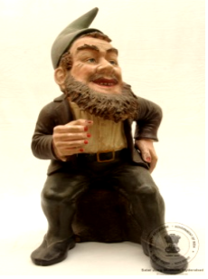

🔇 Is bhasha me is vastu ka audio abhi uplabdh nahi hai.
4. CS - I - 812: बौने की प्रतिमा

4. CS - I - 812
यह “डॉक” की प्रतिमा है, जो सात बौनों में से एक है। वह एक पेड़ के ठूंठ पर बैठा हुआ है, उसका बायाँ हाथ उसकी कमर पर रखा है। उसने हरे रंग की टोपी, सफेद शर्ट और काले जूते पहन रखे हैं। उसकी कमर में पीले बकल (बेल्ट का कुंडा) वाली काली बेल्ट है। सातों बौने डिज़्नी की एनिमेटेड फ़िल्म “स्नो व्हाइट एंड द सेवन ड्वार्फ्स” के पात्र हैं। इनके नाम हैं — डॉक , ग्रम्पी, बैशफुल, स्लीप, स्नीजी, हैपी और डोपी। प्रत्येक की अपनी एक विशिष्ट व्यक्तित्व विशेषता है। वे एक छोटे से कुटीर (झोपड़ी) में रहते हैं और हीरे की खान में काम करते हैं। वे अपनी दयालुता और स्नो व्हाइट का स्वागत करने के लिए प्रसिद्ध हैं। डॉक समूह का नेता है — बुद्धिमान और समझदार। ग्रम्पी सबसे चिड़चिड़ा बौना है। बैशफुल सबसे शर्मीला और रोमांटिक बौना है। स्लीपी हमेशा थका हुआ और नींद में रहता है। स्नीजी वह बौना है जिसका नाम उसके व्यक्तित्व पर नहीं बल्कि उसकी बीमारी (छींकने की आदत) पर रखा गया है। हैपी सबसे प्रसन्नचित और खुशमिजाज बौना है। डोपी सबसे छोटा, अनाड़ी, गूंगा और बिना दाढ़ी वाला बौना है। इनका उद्गम जर्मनी से हुआ है और यह प्रतिमा 20वीं शताब्दी की है।
4. CS - I - 812: Figure of a Dwarf
4. CS - I - 812
This is a figure of “Doc”, one of the seven dwarfs. He is seated on a tree stump with his left hand resting on his waist. He wears a green cap, a white shirt and black shoes, with a black belt and a yellow buckle at his waist. The seven dwarfs are characters from the Disney animated film “Snow White and the Seven Dwarfs”. Their names are Doc, Grumpy, Bashful, Sleepy, Sneezy, Happy and Dopey. Each has his own distinct personality. They live in a small cottage and work in a diamond mine, and they are known for their kindness and for welcoming Snow White. Doc is the leader of the group — wise and sensible. Grumpy is the most irritable dwarf. Bashful is the shyest and most romantic. Sleepy is always tired and drowsy. Sneezy is the dwarf named not for his personality but for his ailment, his habit of sneezing. Happy is the most cheerful and good-humoured. Dopey is the smallest, clumsiest, mute and beardless dwarf. They originate from Germany and this figure dates to the 20th century.
4. CS - I - 812: మరుగుజ్జు ప్రతిమ
4. CS - I - 812
ఇది ఏడుగురు మరుగుజ్జుల్లో ఒకరైన “డాక్” ప్రతిమ. అతను చెట్టు మొద్దుపై కూర్చుని ఉన్నాడు, అతని ఎడమ చేయి నడుముపై ఉంది. అతను ఆకుపచ్చ టోపీ, తెల్లని చొక్కా మరియు నల్లని బూట్లు ధరించాడు. అతని నడుముకు పసుపు బకిల్ ఉన్న నల్లని బెల్టు ఉంది. ఏడుగురు మరుగుజ్జులు డిస్నీ యానిమేటెడ్ చిత్రం “స్నో వైట్ అండ్ ద సెవెన్ డ్వార్ఫ్స్” లోని పాత్రలు. వారి పేర్లు — డాక్, గ్రంపీ, బాష్ఫుల్, స్లీపీ, స్నీజీ, హ్యాపీ మరియు డోపీ. ప్రతి ఒక్కరికీ ప్రత్యేకమైన వ్యక్తిత్వం ఉంది. వారు ఒక చిన్న కుటీరంలో నివసిస్తూ వజ్రాల గనిలో పని చేస్తారు. వారి దయాగుణానికి, స్నో వైట్ను ఆహ్వానించినందుకు వారు ప్రసిద్ధి. డాక్ ఆ బృందానికి నాయకుడు — తెలివైనవాడు, వివేకవంతుడు. గ్రంపీ అందరిలోకి చిరాకు పడేవాడు. బాష్ఫుల్ అత్యంత సిగ్గరి, రొమాంటిక్. స్లీపీ ఎప్పుడూ అలసిపోయి నిద్రమత్తులో ఉంటాడు. స్నీజీకి ఆ పేరు అతని స్వభావం వల్ల కాక తుమ్ముల అలవాటు వల్ల వచ్చింది. హ్యాపీ అందరిలోకి ఉల్లాసవంతుడు. డోపీ అందరికంటే చిన్నవాడు, తడబడేవాడు, మూగవాడు మరియు గడ్డం లేనివాడు. వీరి మూలం జర్మనీ, ఈ ప్రతిమ 20వ శతాబ్దానికి చెందినది.
4. سی ایس-I-812: بونا کا مجمسہ
4. سی ایس-I-812
یہ ایک کھڑی ہوئی جاپانی خاتونمایکوکا مجسمہ ہے جو دونوں ہاتھوں میں چھتری تھامے ہوئی ہے۔ اس کے سینے پر گلابی رنگ کے موتیوں کی مالا ہے جو بیلٹ کی مانند دکھائی دیتی ہے۔ مایکو نے پھولوں کے نقش و نگار والا لباس پہنا ہوا ہے اور سر پر پھول لٹک رہے ہیں۔مائیکو دراصل کیوٹو میں گیشا بننے والی طالبہ لڑکیوں کو کہا جاتا ہے۔ انہیں جاپانی رقص سیکھنا ضروری ہوتا ہے، اسی وجہ سے انہیں مایکو کہا جاتا ہے۔مائی کا مطلب رقص اور کو کا مطلب لڑکی ہے۔گیوشا کے گڑیا نما مجسمے جاپان کی خوبصورت خواتین کی نمائندگی کرتے ہیں، جو رقص گائیکیگفتگو اور دیگر صلاحیتوں کے ذریعے تفریح فراہم کرتی ہیں۔ ہر جاپانی گیوشا گڑیا کا لباس ریشم سے نہایت باریک کاریگری کے ساتھ تیار کیا جاتا ہے اور یہ حقیقی جاپانی گیوشا کے کیمونو جیسا دکھائی دیتا ہے۔تمام جاپانی گیوشا گڑیا سیاہ لکڑی کے چبوترے پر نصب کیے گئے ہیں تاکہ اعلیٰ معیار کی خوبصورتی سامنے آئے۔یہ گڑیا جاپانی حکومت کی جانب سے سالار جنگ میوزیم کو مارچ 1966 میں تحفے میں دیے گئے تھے۔
2. سی ایس-I-303: چوہا پرسوار گنیش جی
یہ بھگوان گنیش کا چینی مٹی سے تیار کیا گیا مجسمہ ہے، جو چار ہاتھوں والا ہے ۔ اس کا اوپری لباس سرخ رنگ کا ہے۔یہ مجسمہ ہندوستان میں تیار کیا گیا اور بیسویں صدی سے تعلق رکھتا ہے۔گنیشجی کو عام طور پر چوہے پر سوار دکھایا جاتا ہے، جو ان کی سواری ہے۔ چوہابےچینذہن خواہشات اور پیچیدہ حالات میں قابو پانے کی صلاحیت کی علامت ہے۔ گنیش جی کا چوہے پر سوار ہونا یہ ظاہر کرتا ہے کہ وہ منفی توانائی کو مثبت میں تبدیل کرنے کی صلاحیت رکھتے ہیں۔گنیشجی ہندو مذہب میں ہاتھی سر والے دیوتا ہیں۔ وہ بھگوان شیو اور دیوی پاروتی کے بیٹے ہیں۔گنیش جیہندو مذہب کے نہایت مقبول اور کثرت سے پوجے جانے والے دیوتاؤں میں شمار ہوتے ہیں۔ ہندو روایت کے مطابق گنیش کو دانائی دولت کامیابی اور خوش بختی کا دیوتا مانا جاتا ہے۔
3. سی ایس-I-305: پدمسمبھوا
یہ تاج پہنی ہوئی دیوی پدمسمبھوا کا رنگین چینی مٹی سے بنا ہوا مجسمہ ہے، جو کمل کے پھول پر بیٹھی ہوئی ہیں اور ان کے دس بازو ہیں۔ یہ پیکر ڈھال کر تیار کیا گیا ہے جس میں دس ہاتھ مختلف علامتی اشیا تھامے ہوئے دکھائے گئے ہیں۔ انہوں نے شوخ رنگوں کے آرام دہ اور دلکش لباس زیب تن کی ہوئی ہیں، اور یہ مجسمہ لہروں کے اوپر بنائے گئے کمل نما چبوترے پر نصب ہے۔ یہ بدھ مت کے تانترک مکتبفکر کی ایک نمایاں اور باوقار شخصیت سمجھی جاتی ہیں، جو اپنی روحانی مہارت اور تانترک عبادات و رسوم کے باعث شہرت رکھتے ہیں۔ تبتی بدھ مت میں انہیں نہایت عقیدت کے ساتھ یاد کیا جاتا ہے اور اکثر تبت میں بدھ مت کی بنیاد رکھنے والی عظیم شخصیات میں شمار کی جاتی ہیں ۔ کہا جاتا ہے کہ یہ کمل کے پھول سے پیدا ہوئی، جو بدھ مت کے فن و ادب میں ایک معروف اور مقدس علامت ہے۔ تبت کی ثقافت میں ان کی حیثیت مرکزی ہے اور انہیں مجسموں مصوری اور فنون لطیفہ کی دیگر صورتوں میں کثرت سے پیش کیا جاتا ہے
4سی ایس-I-812: بونا کا مجسمہ
یہ مجسمہ سات بونوں میں سے ایک کردار ڈاک کا ہے جو درخت کے تنے پر بیٹھا ہوا ہے۔ اس کا بایاں ہاتھ کمر پر ہے۔ اس نے سبز رنگ کی ٹوپیسفید قمیص اور سیاہ جوتے پہن رکھے ہیں۔ کمر پر سیاہ بیلٹ ہے ۔ سات بونے ڈزنی کی مشہور متحرک فلم “اسنو وائٹ اینڈ دی سیون ڈوارفس” کے کردار ہیں۔ ان کے نام یہ ہیں ڈاک گرَمپیبےشفول ، سلیپی، اسنیزی، ہیپی اور ڈوپی ۔ ہر ایک کی شخصیت منفرد ہے۔ یہ سب ایک چھوٹے سے کاٹیج میں رہتے ہیں اور ہیروں کی کان میں کام کرتے ہیں۔ وہ اپنی مہربانی اور اسنو وائٹ کو اپنے گھر میں خوش آمدید کہنے کے لیے جانے جاتے ہیں۔ ڈاک اس گروہ کا رہنما ہے اور ذہین و دانا سمجھا جاتا ہے۔ گرَمپی سب سے زیادہ چڑچڑا ہے۔ بیشفل نہایت شرمیلا اور قدرے رومانوی مزاج رکھتا ہے۔ سلیپی ہمیشہ تھکا ہوا محسوس ہوتا ہے۔ سنیزی کا نام اس کی عادت کی طرف اشارہ کرتا ہے۔ ہیپی سب سے زیادہ خوش مزاج اور ہنس مکھ ہے۔ ڈوپی سب سے کم عمر بھولا بھالا گونگا اور بغیر داڑھی کے دکھایا جاتا ہے۔ یہ مجسمہ جرمنی سے تعلق رکھتا ہے اور بیسویں صدی کا ہے۔
5. سی ایس-II-656: کشتی
سنہری ملمع کاری سے مزین جنگی جہاز کا ایک چھوٹا ماڈل، جس میں تین ستون دو سپاہی پانچ توپیں اور چار رڈر موجود ہیں۔ دوسری جانب تین نقاب نما شکلیں بنی ہوئی ہیں۔ ایک سرے پر جھنڈےاور علامتی پرچم نصب ہیں، جبکہ چار تمغہ نما دائروں میں چینی تحریر ہیں۔ یہ جہاز خوب صورت نقش و نگار سے آراستہ لکڑی کے تراشیدہ چبوترے پر نصب ہے۔ اس طرز کے جنگی جہاز چینی روایتی بادبانی کشتیوں کی ایک قسم سے تعلق رکھتے ہیں۔ ان کی نمایاں خصوصیات میں ہموار اور چپٹی تہہ درمیانی مرکزی رڈر اور عموماً سیدھا پچھلا حصہ شامل ہے۔ یہ جہاز عموماً سامان کی نقل و حمل تفریحی سفر اور دریاؤں یا ساحلی علاقوں میں رہائشی کشتیوں کے طور پر بھی استعمال ہوتے رہے ہیں۔ انہیں خاص طور پر دریائی سفر بین الاقوامی تجارت سمندری مہمات اور یہاں تک کہ بحری جنگوں کے لیے بھی تیار کیا جاتا تھا۔ آج بھی ایشیا کے مختلف علاقوں میں اس طرز کی کشتیاں ماہی گیری تجارت اور سیاحت کے لیے استعمال کی جاتی ہیں۔ یہ مختصر جنگی جہاز چاندی سے تیار کیا گیا ہے۔ یہ چینی طرز کا ماڈل جنگی جہاز بیسویں صدی سے تعلق رکھتا ہے۔
6. سی ایس-IV-346: مختصر ساز
یہ ساز کا ایک مختصر نمونہ ہے جس میں چھ تاریں لگی ہوئی ہیں۔ ساز کیباڈی کے کناروں پر ہاتھی دانت کی تزئین کی گئی ہے ، اور سامنے کی چھڑی کے اوپر ہاتھی دانت کا پرندہ نصب ہے جبکہ پیچھے پر ہاتھی دانت سے تراشا گیا پرندے کا سر موجود ہے۔سازکیباڈیگہرے زرد مائل اور سرخی مائل بھورے رنگ کے مڑھے ہوئے پلاسٹک شیٹ سے ڈھکا ہوا ہے۔ یہ آلہ صوتی تاروں سے آواز پیدا کرتا ہے، جو عموماً نائلوناسٹیل یا کبھی کبھار آنتوں کے بنے ہوتے ہیں۔ عموماً تاروں کو انگلیوں سے چھیڑ کر بجایا جاتا ہے، جبکہ بعض اوقات کمان کے ذریعے بھی ان پر حرکت دی جاتی ہے۔ موسیقار اپنی مہارت کے مطابق مختلف انداز اختیار کرتے ہیں۔ یہ مختصر ساز ہاتھی دانت اور لکڑی سے تیار کیا گیا ہے۔ اس کا تعلق یورپ سے ہے اور یہ بیسویں صدی کا ہے۔
7. سی ایس-IV-531: عدالتی منظر
یہ لکڑی پر تراشا گیا ایک عدالت کا منظر ہے۔ ایک افسر کرسی پر بیٹھا ہے اور اس کے سامنے میز رکھی ہے۔ اس کے دونوں جانب ایک ایک ماتحت موجود ہے، جبکہ چار محافظ پہرہ دے رہے ہیں۔ افسر کے سامنے دو ملزمان کھڑے ہیں؛ ایک کے گردن میں لکڑی کا طوق ڈالا گیا ہے اور دوسرے کے دونوں ہاتھوں میں لکڑی کی بیڑیاں ہیں۔ اس کی ابتدا چین سے ہوئی اور یہ بیسویں صدی سے تعلق رکھتا ہے۔ لکڑی پر کی گئی نقش و نگاری کا ایک مجموعہ چینی مذہبی عقائد کی عکاسی کرتا ہے۔ ہندوستانی عقیدے کے مطابق بھی جو لوگ انسانوں اور جانوروں کے ساتھ نیکی کرتے ہیں، انہیں مرنے کے بعد جنت نصیب ہوتی ہے، اور جو برے اعمال کرتے ہیں انہیں جہنم میں سزا دی جاتی ہے۔ مجرموں کو ان کے مختلف گناہوں کے مطابق جہنم میں طرح طرح کی سزائیں بھگتتے ہوئے دکھایا گیا ہے۔
2. سی ایس-I-303: چوہا پرسوار گنیش جی
یہ بھگوان گنیش کا چینی مٹی سے تیار کیا گیا مجسمہ ہے، جو چار ہاتھوں والا ہے ۔ اس کا اوپری لباس سرخ رنگ کا ہے۔یہ مجسمہ ہندوستان میں تیار کیا گیا اور بیسویں صدی سے تعلق رکھتا ہے۔گنیشجی کو عام طور پر چوہے پر سوار دکھایا جاتا ہے، جو ان کی سواری ہے۔ چوہابےچینذہن خواہشات اور پیچیدہ حالات میں قابو پانے کی صلاحیت کی علامت ہے۔ گنیش جی کا چوہے پر سوار ہونا یہ ظاہر کرتا ہے کہ وہ منفی توانائی کو مثبت میں تبدیل کرنے کی صلاحیت رکھتے ہیں۔گنیشجی ہندو مذہب میں ہاتھی سر والے دیوتا ہیں۔ وہ بھگوان شیو اور دیوی پاروتی کے بیٹے ہیں۔گنیش جیہندو مذہب کے نہایت مقبول اور کثرت سے پوجے جانے والے دیوتاؤں میں شمار ہوتے ہیں۔ ہندو روایت کے مطابق گنیش کو دانائی دولت کامیابی اور خوش بختی کا دیوتا مانا جاتا ہے۔
3. سی ایس-I-305: پدمسمبھوا
یہ تاج پہنی ہوئی دیوی پدمسمبھوا کا رنگین چینی مٹی سے بنا ہوا مجسمہ ہے، جو کمل کے پھول پر بیٹھی ہوئی ہیں اور ان کے دس بازو ہیں۔ یہ پیکر ڈھال کر تیار کیا گیا ہے جس میں دس ہاتھ مختلف علامتی اشیا تھامے ہوئے دکھائے گئے ہیں۔ انہوں نے شوخ رنگوں کے آرام دہ اور دلکش لباس زیب تن کی ہوئی ہیں، اور یہ مجسمہ لہروں کے اوپر بنائے گئے کمل نما چبوترے پر نصب ہے۔ یہ بدھ مت کے تانترک مکتبفکر کی ایک نمایاں اور باوقار شخصیت سمجھی جاتی ہیں، جو اپنی روحانی مہارت اور تانترک عبادات و رسوم کے باعث شہرت رکھتے ہیں۔ تبتی بدھ مت میں انہیں نہایت عقیدت کے ساتھ یاد کیا جاتا ہے اور اکثر تبت میں بدھ مت کی بنیاد رکھنے والی عظیم شخصیات میں شمار کی جاتی ہیں ۔ کہا جاتا ہے کہ یہ کمل کے پھول سے پیدا ہوئی، جو بدھ مت کے فن و ادب میں ایک معروف اور مقدس علامت ہے۔ تبت کی ثقافت میں ان کی حیثیت مرکزی ہے اور انہیں مجسموں مصوری اور فنون لطیفہ کی دیگر صورتوں میں کثرت سے پیش کیا جاتا ہے
4سی ایس-I-812: بونا کا مجسمہ
یہ مجسمہ سات بونوں میں سے ایک کردار ڈاک کا ہے جو درخت کے تنے پر بیٹھا ہوا ہے۔ اس کا بایاں ہاتھ کمر پر ہے۔ اس نے سبز رنگ کی ٹوپیسفید قمیص اور سیاہ جوتے پہن رکھے ہیں۔ کمر پر سیاہ بیلٹ ہے ۔ سات بونے ڈزنی کی مشہور متحرک فلم “اسنو وائٹ اینڈ دی سیون ڈوارفس” کے کردار ہیں۔ ان کے نام یہ ہیں ڈاک گرَمپیبےشفول ، سلیپی، اسنیزی، ہیپی اور ڈوپی ۔ ہر ایک کی شخصیت منفرد ہے۔ یہ سب ایک چھوٹے سے کاٹیج میں رہتے ہیں اور ہیروں کی کان میں کام کرتے ہیں۔ وہ اپنی مہربانی اور اسنو وائٹ کو اپنے گھر میں خوش آمدید کہنے کے لیے جانے جاتے ہیں۔ ڈاک اس گروہ کا رہنما ہے اور ذہین و دانا سمجھا جاتا ہے۔ گرَمپی سب سے زیادہ چڑچڑا ہے۔ بیشفل نہایت شرمیلا اور قدرے رومانوی مزاج رکھتا ہے۔ سلیپی ہمیشہ تھکا ہوا محسوس ہوتا ہے۔ سنیزی کا نام اس کی عادت کی طرف اشارہ کرتا ہے۔ ہیپی سب سے زیادہ خوش مزاج اور ہنس مکھ ہے۔ ڈوپی سب سے کم عمر بھولا بھالا گونگا اور بغیر داڑھی کے دکھایا جاتا ہے۔ یہ مجسمہ جرمنی سے تعلق رکھتا ہے اور بیسویں صدی کا ہے۔
5. سی ایس-II-656: کشتی
سنہری ملمع کاری سے مزین جنگی جہاز کا ایک چھوٹا ماڈل، جس میں تین ستون دو سپاہی پانچ توپیں اور چار رڈر موجود ہیں۔ دوسری جانب تین نقاب نما شکلیں بنی ہوئی ہیں۔ ایک سرے پر جھنڈےاور علامتی پرچم نصب ہیں، جبکہ چار تمغہ نما دائروں میں چینی تحریر ہیں۔ یہ جہاز خوب صورت نقش و نگار سے آراستہ لکڑی کے تراشیدہ چبوترے پر نصب ہے۔ اس طرز کے جنگی جہاز چینی روایتی بادبانی کشتیوں کی ایک قسم سے تعلق رکھتے ہیں۔ ان کی نمایاں خصوصیات میں ہموار اور چپٹی تہہ درمیانی مرکزی رڈر اور عموماً سیدھا پچھلا حصہ شامل ہے۔ یہ جہاز عموماً سامان کی نقل و حمل تفریحی سفر اور دریاؤں یا ساحلی علاقوں میں رہائشی کشتیوں کے طور پر بھی استعمال ہوتے رہے ہیں۔ انہیں خاص طور پر دریائی سفر بین الاقوامی تجارت سمندری مہمات اور یہاں تک کہ بحری جنگوں کے لیے بھی تیار کیا جاتا تھا۔ آج بھی ایشیا کے مختلف علاقوں میں اس طرز کی کشتیاں ماہی گیری تجارت اور سیاحت کے لیے استعمال کی جاتی ہیں۔ یہ مختصر جنگی جہاز چاندی سے تیار کیا گیا ہے۔ یہ چینی طرز کا ماڈل جنگی جہاز بیسویں صدی سے تعلق رکھتا ہے۔
6. سی ایس-IV-346: مختصر ساز
یہ ساز کا ایک مختصر نمونہ ہے جس میں چھ تاریں لگی ہوئی ہیں۔ ساز کیباڈی کے کناروں پر ہاتھی دانت کی تزئین کی گئی ہے ، اور سامنے کی چھڑی کے اوپر ہاتھی دانت کا پرندہ نصب ہے جبکہ پیچھے پر ہاتھی دانت سے تراشا گیا پرندے کا سر موجود ہے۔سازکیباڈیگہرے زرد مائل اور سرخی مائل بھورے رنگ کے مڑھے ہوئے پلاسٹک شیٹ سے ڈھکا ہوا ہے۔ یہ آلہ صوتی تاروں سے آواز پیدا کرتا ہے، جو عموماً نائلوناسٹیل یا کبھی کبھار آنتوں کے بنے ہوتے ہیں۔ عموماً تاروں کو انگلیوں سے چھیڑ کر بجایا جاتا ہے، جبکہ بعض اوقات کمان کے ذریعے بھی ان پر حرکت دی جاتی ہے۔ موسیقار اپنی مہارت کے مطابق مختلف انداز اختیار کرتے ہیں۔ یہ مختصر ساز ہاتھی دانت اور لکڑی سے تیار کیا گیا ہے۔ اس کا تعلق یورپ سے ہے اور یہ بیسویں صدی کا ہے۔
7. سی ایس-IV-531: عدالتی منظر
یہ لکڑی پر تراشا گیا ایک عدالت کا منظر ہے۔ ایک افسر کرسی پر بیٹھا ہے اور اس کے سامنے میز رکھی ہے۔ اس کے دونوں جانب ایک ایک ماتحت موجود ہے، جبکہ چار محافظ پہرہ دے رہے ہیں۔ افسر کے سامنے دو ملزمان کھڑے ہیں؛ ایک کے گردن میں لکڑی کا طوق ڈالا گیا ہے اور دوسرے کے دونوں ہاتھوں میں لکڑی کی بیڑیاں ہیں۔ اس کی ابتدا چین سے ہوئی اور یہ بیسویں صدی سے تعلق رکھتا ہے۔ لکڑی پر کی گئی نقش و نگاری کا ایک مجموعہ چینی مذہبی عقائد کی عکاسی کرتا ہے۔ ہندوستانی عقیدے کے مطابق بھی جو لوگ انسانوں اور جانوروں کے ساتھ نیکی کرتے ہیں، انہیں مرنے کے بعد جنت نصیب ہوتی ہے، اور جو برے اعمال کرتے ہیں انہیں جہنم میں سزا دی جاتی ہے۔ مجرموں کو ان کے مختلف گناہوں کے مطابق جہنم میں طرح طرح کی سزائیں بھگتتے ہوئے دکھایا گیا ہے۔
4. CS - I - 812: বামনের আকৃতি
4. CS - I - 812
এখানে একটি যুদ্ধজাহাজের ক্ষুদ্রাকৃতি মডেল প্রদর্শিত হয়েছে, যা স্বর্ণখচিত এবং এতে তিনটি মাস্তুল, দুইজন সৈন্য, পাঁচটি কামান, চারটি হালএবং অপর প্রান্তে তিনটি মুখোশ রয়েছে। জাহাজের এক প্রান্তে পতাকা ও রাজকীয় নিশান রয়েছে এবং চারটি বৃত্তাকার অলংকরণেরমধ্যে চীনা লিপি খোদাই করা আছে। সম্পূর্ণ জাহাজটি একটি কারুকার্যমণ্ডিত কাঠের বেদির ওপর স্থাপিত।এই যুদ্ধজাহাজগুলি চীনের এক প্রকার ঐতিহ্যবাহী পালতোলা জাহাজ। সমতল তলদেশ, মাঝখানে একটি নিয়ন্ত্রক হাল এবং পেছনের চ্যাপ্টা নকশা এগুলির প্রধান বৈশিষ্ট্য। সাধারণত পণ্য পরিবহন, প্রমোদভ্রমণ, এমনকি নদী ও উপকূলীয় অঞ্চলে ভাসমান আবাস হিসেবেও এগুলি ব্যবহৃত হতো। এই জাহাজগুলি বিশেষত নদীপথে চলাচল, আন্তর্জাতিক বাণিজ্য অভিযান এবং নৌ-যুদ্ধের জন্যও নকশা করা হয়েছিল। আজও এশিয়ার বিভিন্ন প্রান্তে মাছ ধরা, বাণিজ্য এবং পর্যটন শিল্পে এ ধরনের জাহাজ ব্যবহৃত হয়। রুপোর তৈরি এই সূক্ষ্ম যুদ্ধজাহাজটি ২০ শতকের এবং এটি চীনা শিল্পকর্মের একটি অনন্য নিদর্শন।
4. CS-I-812: ઠીંગણાની આકૃતિ
4. CS-I-812
ઉભેલી જાપાની સ્ત્રી “માઇકો”ની પ્રતિમા, જેણે બંને હાથમાં છત્રી પકડી રાખી છે. છાતી પર ગુલાબી રંગની મણિયાની પટ્ટી (બેલ્ટ) જેવી શોભા છે. ફૂલોના આકારવાળું વસ્ત્ર પરિધાન કર્યા છે અને માથેથી લટકતા ફૂલોની સજાવટ છે. “માઇકો”નો અર્થ ક્યોટોમાં શિક્ષાર્થી ગેશા યુવતી થાય છે. તેમને જાપાની નૃત્યો શીખવા ફરજિયાત હોય છે, તેથી તેમને “માઇકો” કહેવામાં આવે છે — કારણ કે “માઇ” એટલે નૃત્ય અને “કો” એટલે છોકરી. ગેશા ગુડિયા એવી આકર્ષક જાપાની સ્ત્રીઓનું પ્રતિનિધિત્વ કરે છે જે નૃત્ય, ગીત, સંવાદ અને અન્ય પ્રતિભા દ્વારા મનોરંજન આપે છે. દરેક જાપાની ગેશા ગુડિયાનું વસ્ત્ર રેશમથી સુંદર રીતે બનાવવામાં આવ્યું છે અને તે ખરેખર જાપાની ગેશાઓ દ્વારા પહેરાતી અસલી કિમોનો જેવી લાગે છે. અમારી (અહીની) તમામ જાપાની ગેશા ગુડિયાઓને ઊંચી ગુણવત્તા આપવા માટે કાળા લાકડાના તખ્તા પર ઉભી રાખવામાં આવી છે. આ ગુડિયાઓ જાપાન સરકારે માર્ચ 1966માં સલાર જંગ સંગ્રહાલયને ભેટ તરીકે આપી હતી.
2.CS-I-303: ગણેશ ઓન મુશિકા
પોર્સેલિનથી બનેલી ભગવાન ગણેશની પ્રતિમા, જેઓ ચાર હાથ ધરાવે છે અને ઉંદર પર આરુઢ છે. તેમના ઉપરના વસ્ત્રનો રંગ લાલ છે. આ પ્રતિમા ભારતમાંથી ઉત્પન્ન થઈ છે અને તેનું સમયકાળ 20મી સદીનો છે. ભગવાન ગણેશને પ્રસિદ્ધ રીતે તેમના વાહન ઉંદર (મૂષક) પર આરુઢ દર્શાવવામાં આવે છે. ઉંદર અશાંત મન, ઇચ્છાઓ અને જટિલ માર્ગોમાંથી પસાર થવાની ક્ષમતા દર્શાવે છે. ભગવાન ગણેશના વાહન તરીકે ઉંદર કેમ છે, તેની પાછળ એક કથા છે. ગણેશજી પાસે નકારાત્મકતાને સકારાત્મકતામાં પરિવર્તિત કરવાની શક્તિ છે, તેથી તેમણે મૂષક પર આરુઢ થવાનું પસંદ કર્યું. ગણેશજી હિંદુ ધર્મમાં હાથીમુખવાળા દેવતા છે. તેઓ ભગવાન શિવ અને દેવી પાર્વતીના પુત્ર છે. ગણેશજી હિંદુ ધર્મમાં અત્યંત લોકપ્રિય અને સૌથી વધુ પૂજાતા દેવતાઓમાંના એક છે. હિંદુ પરંપરા મુજબ ગણેશજી જ્ઞાન, સંપત્તિ, સફળતા અને શુભલાભના દેવતા તરીકે માનવામાં આવે છે.
3. CS-I-305: પદ્મસંભવ
રંગીન પોર્સેલિનથી બનેલી તાજધારી દેવી પદ્મસમ્ભવની પ્રતિમા, જે દસ હાથ ધરાવે છે અને કમળ પર બેઠેલી છે. આ દાવવાદી પ્રતિમા દસ હાથ સાથે આકારિત છે, જેમાં દરેક હાથમાં અલગ-અલગ ચિન્હો છે. તેજસ્વી રંગોના ઢીલા વસ્ત્રો પહેરેલા છે અને સમુદ્રની લહેરો ઉપર ઊભેલા કમળના આકારના પાટિયા પર સ્થિત છે. પદ્મસમ્ભવ તાંત્રિક બૌદ્ધ ધર્મના એક મહત્વપૂર્ણ વ્યક્તિત્વ છે, જે તેમના તાંત્રિક સાધનો અને ક્રિયાઓના કુશળ ઉપયોગ માટે જાણીતા છે. તેઓ તિબેટી બૌદ્ધ ધર્મમાં અતિ શ્રદ્ધાપાત્ર છે અને તિબેટમાં બૌદ્ધ ધર્મના સ્થાપક પુરુષોમાંના એક માનવામાં આવે છે. પદ્મસમ્ભવે તિબેટમાં બૌદ્ધ ધર્મની સ્થાપના અને મજબૂતિકરણમાં અગત્યની ભૂમિકા ભજવી હતી. કહેવામાં આવે છે કે તેઓ કમળના ફૂલમાંથી જન્મેલા હતા, જે બૌદ્ધ કલા અને સાહિત્યમાં સામાન્ય પ્રતીક છે. પદ્મસમ્ભવ તિબેટી સંસ્કૃતિના કેન્દ્રીય વ્યક્તિત્વ છે અને તેમની પ્રતિમાઓ, ચિત્રો અને અન્ય કલારૂપોમાં સમગ્ર તિબેટમાં દર્શાવવામાં આવે છે. આ પ્રતિમા જાપાનમાં ઉત્પન્ન થયેલી છે અને તેનું સમયકાળ 19મી સદીનો છે.
4. CS-I-812: ઠીંગણાની આકૃતિ
અહીં “ડોક” નામનો આકાર છે, જે સાત ઠીંગણાઓમાંનો એક છે, ઝાડના ખૂંટ પર બેઠેલો છે. તેની ડાબો હાથ કમર પર છે, તેણે લીલા રંગની ટોપી, સફેદ શર્ટ અને કાળા જૂતાં પહેર્યા છે. આ આકાર કાળા પટ્ટા અને પીળી બકલ સાથે સજ્જ છે. સાત બોના “સ્નો વ્હાઈટ એન્ડ ધ સેવન ડ્વાર્ફ્સ” નામની ડિઝ્નીની એનિમેટેડ ફિલ્મના પાત્રોનો એક જૂથ છે. તેઓ છે – ડોક, ગ્રમ્પી, બેશફુલ, સ્લીપી, સ્નીઝી, હેપ્પી અને ડોપી – દરેકની પોતાની અલગ વ્યક્તિગતતા છે. તેઓ જંગલની વચ્ચે એક નાનકડા કોટેજમાં રહે છે અને હીરાની ખાણમાં કામ કરે છે. તેઓ તેમની દયાળુ સ્વભાવ અને સ્નો વ્હાઈટને પોતાના ઘરે સ્વાગત કરવા માટે જાણીતા છે. ડોક આ જૂથનો નેતા છે – બુદ્ધિશાળી અને સમજદાર. ગ્રમ્પી સૌથી વધુ ચીડિયાળો બોન છે. બેશફુલ સૌથી શરમાળ અને રોમેન્ટિક છે. સ્લીપી હંમેશાં થાકેલો અને ઊંઘેલો રહે છે. સ્નીઝી એ એકમાત્ર બોન છે જેનું નામ તેના સ્વભાવને નહીં, પણ એક આરોગ્યસ્થિતિને દર્શાવે છે. હેપ્પી સૌથી આનંદી અને ખુશમિજાજ બોન છે. ડોપી સૌથી નાનો અને અણઘડ ઠીંગણો છે, બોલતો નથી અને દાઢી વિનાનો છે. આ આકાર જર્મનીમાં બનાવાયેલો છે અને તેનો સમયકાળ 20મી સદીનો છે.
2.CS-I-303: ગણેશ ઓન મુશિકા
પોર્સેલિનથી બનેલી ભગવાન ગણેશની પ્રતિમા, જેઓ ચાર હાથ ધરાવે છે અને ઉંદર પર આરુઢ છે. તેમના ઉપરના વસ્ત્રનો રંગ લાલ છે. આ પ્રતિમા ભારતમાંથી ઉત્પન્ન થઈ છે અને તેનું સમયકાળ 20મી સદીનો છે. ભગવાન ગણેશને પ્રસિદ્ધ રીતે તેમના વાહન ઉંદર (મૂષક) પર આરુઢ દર્શાવવામાં આવે છે. ઉંદર અશાંત મન, ઇચ્છાઓ અને જટિલ માર્ગોમાંથી પસાર થવાની ક્ષમતા દર્શાવે છે. ભગવાન ગણેશના વાહન તરીકે ઉંદર કેમ છે, તેની પાછળ એક કથા છે. ગણેશજી પાસે નકારાત્મકતાને સકારાત્મકતામાં પરિવર્તિત કરવાની શક્તિ છે, તેથી તેમણે મૂષક પર આરુઢ થવાનું પસંદ કર્યું. ગણેશજી હિંદુ ધર્મમાં હાથીમુખવાળા દેવતા છે. તેઓ ભગવાન શિવ અને દેવી પાર્વતીના પુત્ર છે. ગણેશજી હિંદુ ધર્મમાં અત્યંત લોકપ્રિય અને સૌથી વધુ પૂજાતા દેવતાઓમાંના એક છે. હિંદુ પરંપરા મુજબ ગણેશજી જ્ઞાન, સંપત્તિ, સફળતા અને શુભલાભના દેવતા તરીકે માનવામાં આવે છે.
3. CS-I-305: પદ્મસંભવ
રંગીન પોર્સેલિનથી બનેલી તાજધારી દેવી પદ્મસમ્ભવની પ્રતિમા, જે દસ હાથ ધરાવે છે અને કમળ પર બેઠેલી છે. આ દાવવાદી પ્રતિમા દસ હાથ સાથે આકારિત છે, જેમાં દરેક હાથમાં અલગ-અલગ ચિન્હો છે. તેજસ્વી રંગોના ઢીલા વસ્ત્રો પહેરેલા છે અને સમુદ્રની લહેરો ઉપર ઊભેલા કમળના આકારના પાટિયા પર સ્થિત છે. પદ્મસમ્ભવ તાંત્રિક બૌદ્ધ ધર્મના એક મહત્વપૂર્ણ વ્યક્તિત્વ છે, જે તેમના તાંત્રિક સાધનો અને ક્રિયાઓના કુશળ ઉપયોગ માટે જાણીતા છે. તેઓ તિબેટી બૌદ્ધ ધર્મમાં અતિ શ્રદ્ધાપાત્ર છે અને તિબેટમાં બૌદ્ધ ધર્મના સ્થાપક પુરુષોમાંના એક માનવામાં આવે છે. પદ્મસમ્ભવે તિબેટમાં બૌદ્ધ ધર્મની સ્થાપના અને મજબૂતિકરણમાં અગત્યની ભૂમિકા ભજવી હતી. કહેવામાં આવે છે કે તેઓ કમળના ફૂલમાંથી જન્મેલા હતા, જે બૌદ્ધ કલા અને સાહિત્યમાં સામાન્ય પ્રતીક છે. પદ્મસમ્ભવ તિબેટી સંસ્કૃતિના કેન્દ્રીય વ્યક્તિત્વ છે અને તેમની પ્રતિમાઓ, ચિત્રો અને અન્ય કલારૂપોમાં સમગ્ર તિબેટમાં દર્શાવવામાં આવે છે. આ પ્રતિમા જાપાનમાં ઉત્પન્ન થયેલી છે અને તેનું સમયકાળ 19મી સદીનો છે.
4. CS-I-812: ઠીંગણાની આકૃતિ
અહીં “ડોક” નામનો આકાર છે, જે સાત ઠીંગણાઓમાંનો એક છે, ઝાડના ખૂંટ પર બેઠેલો છે. તેની ડાબો હાથ કમર પર છે, તેણે લીલા રંગની ટોપી, સફેદ શર્ટ અને કાળા જૂતાં પહેર્યા છે. આ આકાર કાળા પટ્ટા અને પીળી બકલ સાથે સજ્જ છે. સાત બોના “સ્નો વ્હાઈટ એન્ડ ધ સેવન ડ્વાર્ફ્સ” નામની ડિઝ્નીની એનિમેટેડ ફિલ્મના પાત્રોનો એક જૂથ છે. તેઓ છે – ડોક, ગ્રમ્પી, બેશફુલ, સ્લીપી, સ્નીઝી, હેપ્પી અને ડોપી – દરેકની પોતાની અલગ વ્યક્તિગતતા છે. તેઓ જંગલની વચ્ચે એક નાનકડા કોટેજમાં રહે છે અને હીરાની ખાણમાં કામ કરે છે. તેઓ તેમની દયાળુ સ્વભાવ અને સ્નો વ્હાઈટને પોતાના ઘરે સ્વાગત કરવા માટે જાણીતા છે. ડોક આ જૂથનો નેતા છે – બુદ્ધિશાળી અને સમજદાર. ગ્રમ્પી સૌથી વધુ ચીડિયાળો બોન છે. બેશફુલ સૌથી શરમાળ અને રોમેન્ટિક છે. સ્લીપી હંમેશાં થાકેલો અને ઊંઘેલો રહે છે. સ્નીઝી એ એકમાત્ર બોન છે જેનું નામ તેના સ્વભાવને નહીં, પણ એક આરોગ્યસ્થિતિને દર્શાવે છે. હેપ્પી સૌથી આનંદી અને ખુશમિજાજ બોન છે. ડોપી સૌથી નાનો અને અણઘડ ઠીંગણો છે, બોલતો નથી અને દાઢી વિનાનો છે. આ આકાર જર્મનીમાં બનાવાયેલો છે અને તેનો સમયકાળ 20મી સદીનો છે.
4. CS - I -812: ಫಿಗರ್ ಆಫ್ ಡ್ವಾರ್ಫ್
4. CS - I -812
ಎರಡೂ ಕೈಗಳಲ್ಲಿ ಛತ್ರಿಯನ್ನು ಹಿಡಿದು ನಿಂತಿರುವ ಜಪಾನೀಸ್ ಮಹಿಳೆ "ಮೈಕೊ" ರೂಪದ ಈ ಸುಂದರ ಶಿಲ್ಪ ಕಲಾಕೃತಿಯು, ಎದೆಯ ಮೇಲೆ ಗುಲಾಬಿ ಬಣ್ಣದ ಮಣಿಗಳ ಪಟ್ಟಿಯನ್ನು ಹೊಂದಿದೆ. ಆಕೆ ಹೂವಿನ ವಿನ್ಯಾಸವಿರುವ ಅತ್ಯಾಕರ್ಷಕ ಉಡುಪನ್ನು ಧರಿಸಿದ್ದಾಳೆ ಮತ್ತು ಆಕೆಯ ತಲೆಯಮೇಲಿನಿಂದ ಹೂವುಗಳು ನೇತಾಡುತ್ತಿವೆ. ಕ್ಯೋಟೋ ನಗರದಲ್ಲಿ 'ಗೀಶಾ' ಕಲೆಯ ತರಬೇತಿ ಪಡೆಯುತ್ತಿರುವ ಯುವತಿಯನ್ನು "ಮೈಕೊ" ಎಂದು ಕರೆಯಲಾಗುತ್ತದೆ. ಅವರು ಕಡ್ಡಾಯವಾಗಿ ಜಪಾನೀಸ್ ನೃತ್ಯಗಳನ್ನು ಕಲಿಯಬೇಕಾಗಿರುವುದರಿಂದ ಅವರನ್ನು 'ಮೈಕೊ' ಎಂದು ಕರೆಯಲಾಗುತ್ತದೆ; ಏಕೆಂದರೆ ಜಪಾನೀಸ್ ಭಾಷೆಯಲ್ಲಿ "ಮೈ" ಎಂದರೆ 'ನೃತ್ಯ' ಮತ್ತು "ಕೊ" ಎಂದರೆ 'ಹುಡುಗಿ' ಎಂದರ್ಥ. ಗೀಶಾ ಗೊಂಬೆಗಳು ಆಕರ್ಷಕ ಜಪಾನೀಸ್ ಮಹಿಳೆಯರ ಪ್ರತಿಕೃತಿಗಳಾಗಿದ್ದು, ನಿಜವಾದ ಗೀಶಾಗಳು ನೃತ್ಯ, ಹಾಡುಗಾರಿಕೆ, ಸಂಭಾಷಣೆ ಮತ್ತು ಇತರ ಪ್ರತಿಭೆಗಳಂತಹ ವಿವಿಧ ಕಲೆಗಳ ಮೂಲಕ ಜನರಿಗೆ ಮನರಂಜನೆ ನೀಡುತ್ತಾರೆ. ಪ್ರತಿಯೊಂದು ಜಪಾನೀಸ್ ಗೀಶಾ ಗೊಂಬೆಯ ಉಡುಪನ್ನು ರೇಷ್ಮೆಯಿಂದ ಅತ್ಯಂತ ನಾಜೂಕಾಗಿ ತಯಾರಿಸಲಾಗುತ್ತದೆ ಮತ್ತು ಇದು ನಿಜವಾದ ಜಪಾನೀಸ್ ಗೀಶಾಗಳು ಧರಿಸುವ ಅಸಲಿ 'ಕಿಮೋನೊ' ಉಡುಪಿನಂತೆಯೇ ಕಾಣುತ್ತದೆ. ಭವ್ಯವಾದ ನೋಟವನ್ನು ನೀಡುವುದಕ್ಕಾಗಿ ನಮ್ಮ ಎಲ್ಲಾ ಜಪಾನೀಸ್ ಗೀಶಾ ಗೊಂಬೆಗಳನ್ನು ಕಪ್ಪು ಬಣ್ಣದ ಮರದ ಪೀಠದ ಮೇಲೆ ನಿಲ್ಲಿಸಲಾಗಿದೆ. ಮಾರ್ಚ್ 1966 ರಲ್ಲಿ ಜಪಾನ್ ಸರ್ಕಾರವು ಈ ಗೊಂಬೆಗಳನ್ನು ಹೈದರಾಬಾದ್ನ ಸಾಲಾರ್ ಜಂಗ್ ವಸ್ತುಸಂಗ್ರಹಾಲಯಕ್ಕೆ ಉಡುಗೊರೆಯಾಗಿ ನೀಡಿದೆ.
2. CS - I -302: ಮುಶಿಕಮೇಲೆಗಣೇಶ
ನಾಲ್ಕು ಕೈಗಳನ್ನು ಹೊಂದಿರುವ ಮತ್ತು ಇಲಿಯ ಮೇಲೆ ಆಸೀನರಾಗಿರುವ ಗಣೇಶನ ಪಿಂಗಾಣಿಯ ಸುಂದರ ಶಿಲ್ಪ ಕಲಾಕೃತಿಯಾಗಿದೆ. ಮೇಲುಡುಪುಕೆಂಪು ಬಣ್ಣದ್ದಾಗಿದೆ. ಭಾರತದಲ್ಲಿಯೇ ರೂಪುಗೊಂಡಿರುವ ಈ ಕಲಾಕೃತಿಯು 20ನೇ ಶತಮಾನದಷ್ಟು ಹಳೆಯದಾಗಿದೆ. ಗಣೇಶನು ತನ್ನ ವಾಹನವಾದ 'ಮೂಷಿಕ'ನಮೇಲೆ ಸವಾರಿ ಮಾಡುತ್ತಿರುವಂತೆ ಹೆಚ್ಚಾಗಿ ಚಿತ್ರಿಸಲಾಗುತ್ತದೆ. ಇಲಿಯು ಚಂಚಲ ಮನಸ್ಸು, ಆಸೆಗಳು ಮತ್ತು ಅತ್ಯಂತ ಸಂಕೀರ್ಣವಾದ ಮಾರ್ಗಗಳಲ್ಲಿಯೂ ಸಲೀಸಾಗಿ ಚಲಿಸುವ ಸಾಮರ್ಥ್ಯವನ್ನು ಪ್ರತಿನಿಧಿಸುತ್ತದೆ. ಗಣೇಶನು ಇಲಿಯನ್ನು ತನ್ನ ವಾಹನವನ್ನಾಗಿ ಹೊಂದಿರುವ ಹಿಂದೆ ಒಂದು ಪೌರಾಣಿಕ ಕಥೆಯಿದೆ. ಮೂಷಿಕನನ್ನು ವಾಹನವಾಗಿ ಆರಿಸಿಕೊಳ್ಳುವ ಮೂಲಕ, ನಕಾರಾತ್ಮಕತೆಯನ್ನು ಸಕಾರಾತ್ಮಕವಾಗಿ ಪರಿವರ್ತಿಸುವ ಗಣೇಶನ ಅಪಾರ ಸಾಮರ್ಥ್ಯವನ್ನು ಇದು ಎತ್ತಿತೋರಿಸುತ್ತದೆ. ಹಿಂದೂ ಧರ್ಮದಲ್ಲಿ ಗಣೇಶನು ಆನೆಮುಖವನ್ನು ಹೊಂದಿರುವ ದೇವರಾಗಿದ್ದಾನೆ. ಆತ ಶಿವ ಮತ್ತು ಪಾರ್ವತಿಯರ ಮುದ್ದಿನ ಮಗ. ಹಿಂದೂ ಧರ್ಮದಲ್ಲಿ ಗಣೇಶನು ಅತ್ಯಂತ ಜನಪ್ರಿಯ ದೇವರಾಗಿದ್ದು, ಅತಿ ಹೆಚ್ಚು ಪೂಜಿಸಲ್ಪಡುವ ದೇವರುಗಳಲ್ಲಿ ಒಬ್ಬನಾಗಿದ್ದಾನೆ. ಹಿಂದೂ ಸಂಪ್ರದಾಯದ ಪ್ರಕಾರ, ಗಣೇಶನನ್ನು ಬುದ್ಧಿವಂತಿಕೆ, ಸಂಪತ್ತು, ಯಶಸ್ಸು ಮತ್ತು ಅದೃಷ್ಟದ ದೇವರು ಎಂದು ಕರೆಯಲಾಗುತ್ತದೆ.
3. CS-I-305: ಪದ್ಮಸಂಭವ
ಕಮಲದ ಮೇಲೆ ಆಸೀನರಾಗಿರುವ, ಕಿರೀಟಧಾರಿ 'ಪದ್ಮಸಂಭವ' ದೇವತೆಯಹತ್ತು ಕೈಗಳಿರುವ ಬಣ್ಣ ಬಳಿದ ಪಿಂಗಾಣಿ ಶಿಲ್ಪ ಕಲಾಕೃತಿ ಇದು. ಈ ಟಾವೊ ಆಕೃತಿಯು, ತನ್ನ ಹತ್ತು ಕೈಗಳಲ್ಲಿ ವಿವಿಧ ಲಾಂಛನಗಳನ್ನು ಹಿಡಿದುಕೊಂಡಿದ್ದು, ಗಾಢ ಬಣ್ಣದ ಸಡಿಲವಾದ ಉಡುಪುಗಳನ್ನು ಧರಿಸಿದ್ದಾಳೆ. ಅಲೆಗಳ ಮೇಲಿರುವ ಕಮಲದ ಪೀಠದ ಮೇಲೆ ಆಕೆಯನ್ನು ವಿನ್ಯಾಸಗೊಳಿಸಲಾಗಿದೆ. ಪದ್ಮಸಂಭವರು ತಾಂತ್ರಿಕ ಬೌದ್ಧಧರ್ಮದಲ್ಲಿ ಪ್ರಮುಖ ವ್ಯಕ್ತಿಯಾಗಿದ್ದು, ತಾಂತ್ರಿಕ ಆಚರಣೆಗಳು ಮತ್ತು ವಿಧಿವಿಧಾನಗಳನ್ನು ಅತ್ಯಂತ ಕೌಶಲ್ಯಯುತವಾಗಿ ಬಳಸುವಲ್ಲಿ ಪ್ರಸಿದ್ಧರಾಗಿದ್ದಾರೆ. ಟಿಬೆಟಿಯನ್ ಬೌದ್ಧಧರ್ಮದಲ್ಲಿ ಪದ್ಮಸಂಭವರು ಅತ್ಯಂತ ಪೂಜ್ಯ ವ್ಯಕ್ತಿಯಾಗಿದ್ದು, ಟಿಬೆಟ್ನಲ್ಲಿ ಈ ಧರ್ಮದ ಸಂಸ್ಥಾಪಕರಲ್ಲಿ ಒಬ್ಬರೆಂದು ಇವರನ್ನು ಪರಿಗಣಿಸಲಾಗಿದೆ. ಟಿಬೆಟ್ನಲ್ಲಿ ಬೌದ್ಧಧರ್ಮವನ್ನು ಸ್ಥಾಪಿಸುವಲ್ಲಿ ಮತ್ತು ಭದ್ರಪಡಿಸುವಲ್ಲಿ ಪದ್ಮಸಂಭವರು ನಿರ್ಣಾಯಕ ಪಾತ್ರ ವಹಿಸಿದ್ದಾರೆ. ಬೌದ್ಧ ಕಲೆ ಮತ್ತು ಸಾಹಿತ್ಯದ ಸಾಮಾನ್ಯ ಸಂಕೇತವಾಗಿರುವ ಕಮಲದ ಹೂವಿನಿಂದ ಇವರು ಜನಿಸಿದರು ಎಂದು ಹೇಳಲಾಗುತ್ತದೆ. ಟಿಬೆಟಿಯನ್ ಸಂಸ್ಕೃತಿಯಲ್ಲಿ ಪದ್ಮಸಂಭವರು ಕೇಂದ್ರ ವ್ಯಕ್ತಿಯಾಗಿದ್ದು, ಆ ಪ್ರದೇಶದಾದ್ಯಂತ ಪ್ರತಿಮೆಗಳು, ವರ್ಣಚಿತ್ರಗಳು ಮತ್ತು ಇತರ ಕಲಾ ಪ್ರಕಾರಗಳಲ್ಲಿ ಇವರನ್ನು ಹೆಚ್ಚಾಗಿ ಚಿತ್ರಿಸಲಾಗಿದೆ. ಜಪಾನ್ನಲ್ಲಿ ರೂಪುಗೊಂಡಿರುವ ಈ ಅದ್ಭುತ ಶಿಲ್ಪ ಕಲಾಕೃತಿಯು 19ನೇ ಶತಮಾನದಷ್ಟು ಹಳೆಯದಾಗಿದೆ.
4. CS-I-812: ಫಿಗರ್ ಆಫ್ ಡ್ವಾರ್ಫ್
ಏಳು ಡ್ವಾರ್ಫ್ಪೈಕಿ ಒಬ್ಬನಾದ 'ಡಾಕ್' ನ ಈ ಶಿಲ್ಪ ಕಲಾಕೃತಿಯು, ಮರದ ಸ್ಟಂಪ್ನ್ಮೇಲೆ ಕುಳಿತಿದ್ದಾನೆ. ಅವನು ತನ್ನ ಎಡಗೈಯನ್ನು ಸೊಂಟದ ಮೇಲಿಟ್ಟುಕೊಂಡಿದ್ದು, ಹಸಿರು ಬಣ್ಣದ ಟೋಪಿ, ಬಿಳಿ ಶರ್ಟ್ ಮತ್ತು ಕಪ್ಪು ಬೂಟುಗಳನ್ನು ಧರಿಸಿದ್ದಾನೆ. ಜೊತೆಗೆ, ಹಳದಿ ಬಣ್ಣದ ಬಕಲ್ ಇರುವ ಕಪ್ಪು ಬೆಲ್ಟ್ ಅನ್ನು ಕೂಡ ಈತ ಧರಿಸಿದ್ದಾನೆ.ಈ ಏಳು ಡ್ವಾರ್ಫ್ ಡಿಸ್ನಿಯ ಪ್ರಸಿದ್ಧ ಅನಿಮೇಟೆಡ್ ಚಲನಚಿತ್ರವಾದ "ಸ್ನೋ ವೈಟ್ ಅಂಡ್ ದಿ ಸೆವೆನ್ ಡ್ವಾರ್ಫ್ಸ್" ನ ಪಾತ್ರಗಳಾಗಿದ್ದಾರೆ. ಅವರುಗಳೆಂದರೆ ಡಾಕ್, ಗ್ರಂಪಿ, ಬ್ಯಾಶ್ಫುಲ್, ಸ್ಲೀಪಿ, ಸ್ನೀಝಿ, ಹ್ಯಾಪಿ ಮತ್ತು ಡೋಪೆ. ಪ್ರತಿಯೊಬ್ಬರೂ ತಮ್ಮದೇ ಆದ ವಿಶಿಷ್ಟ ವ್ಯಕ್ತಿತ್ವವನ್ನು ಹೊಂದಿದ್ದಾರೆ. ಅವರು ಕಾಡಿನ ಗುಡಿಸಲೊಂದರಲ್ಲಿ ವಾಸಿಸುತ್ತಿರುತ್ತಾರೆ ಮತ್ತು ವಜ್ರದ ಗಣಿಯಲ್ಲಿ ಕೆಲಸ ಮಾಡುತ್ತಾರೆ. ತಮ್ಮ ದಯಾಪರತೆ ಹಾಗೂ ಸ್ನೋ ವೈಟ್ ಅನ್ನು ತಮ್ಮ ಮನೆಗೆ ಪ್ರೀತಿಯಿಂದ ಸ್ವಾಗತಿಸಿದ್ದಕ್ಕಾಗಿ ಅವರು ಹೆಸರುವಾಸಿಯಾಗಿದ್ದಾರೆ.ಇವರಲ್ಲಿ 'ಡಾಕ್' ಈ ಗುಂಪಿನ ನಾಯಕನಾಗಿದ್ದು, ಅತ್ಯಂತ ಬುದ್ಧಿವಂತ ಮತ್ತು ಜಾಣನಾಗಿದ್ದಾನೆ. 'ಗ್ರಂಪಿ' ಅತ್ಯಂತ ಸಿಡುಕನಾಗಿದ್ದಾನೆ. 'ಬ್ಯಾಶ್ಫುಲ್' ಅತ್ಯಂತ ನಾಚಿಕೆ ಸ್ವಭಾವದವನು ಮತ್ತು ರೊಮ್ಯಾಂಟಿಕ್ ಆದ ಕುಬ್ಜನಾಗಿದ್ದಾನೆ. 'ಸ್ಲೀಪಿ' ಯಾವಾಗಲೂ ಸುಸ್ತಾಗಿರುತ್ತಾನೆ ಮತ್ತು ನಿದ್ದೆ ಮಂಪರಿನಲ್ಲಿರುತ್ತಾನೆ. 'ಸ್ನೀಝಿ' ಯ ಹೆಸರು ಅವನ ವ್ಯಕ್ತಿತ್ವವನ್ನು ಬಿಂಬಿಸುವ ಬದಲು ಅವನ ಆರೋಗ್ಯದ ಸ್ಥಿತಿಯನ್ನು ಸೂಚಿಸುವ ಏಕೈಕ ಕುಬ್ಜನಾಗಿದ್ದಾನೆ. 'ಹ್ಯಾಪಿ' ಎಲ್ಲರಿಗಿಂತ ಅತ್ಯಂತ ಹರ್ಷಚಿತ್ತದಿಂದ ಮತ್ತು ಉಲ್ಲಾಸದಿಂದ ಇರುವವನಾಗಿದ್ದಾನೆ. ಇನ್ನು 'ಡೋಪಿ' ಎಲ್ಲರಿಗಿಂತ ಕಿರಿಯ ಹಾಗೂ ಸ್ವಲ್ಪ ಅಸಡ್ಡೆಯ ಸ್ವಭಾವದವನಾಗಿದ್ದು, ಅವನು ಮೂಕನಾಗಿದ್ದಾನೆ ಮತ್ತು ಗಡ್ಡವನ್ನು ಹೊಂದಿಲ್ಲ.ಜರ್ಮನಿ ದೇಶದಲ್ಲಿ ರೂಪುಗೊಂಡಿರುವ ಈ ಸುಂದರ ಶಿಲ್ಪ ಕಲಾಕೃತಿಯು 20ನೇ ಶತಮಾನದಷ್ಟು ಹಳೆಯದಾಗಿದೆ.
2. CS - I -302: ಮುಶಿಕಮೇಲೆಗಣೇಶ
ನಾಲ್ಕು ಕೈಗಳನ್ನು ಹೊಂದಿರುವ ಮತ್ತು ಇಲಿಯ ಮೇಲೆ ಆಸೀನರಾಗಿರುವ ಗಣೇಶನ ಪಿಂಗಾಣಿಯ ಸುಂದರ ಶಿಲ್ಪ ಕಲಾಕೃತಿಯಾಗಿದೆ. ಮೇಲುಡುಪುಕೆಂಪು ಬಣ್ಣದ್ದಾಗಿದೆ. ಭಾರತದಲ್ಲಿಯೇ ರೂಪುಗೊಂಡಿರುವ ಈ ಕಲಾಕೃತಿಯು 20ನೇ ಶತಮಾನದಷ್ಟು ಹಳೆಯದಾಗಿದೆ. ಗಣೇಶನು ತನ್ನ ವಾಹನವಾದ 'ಮೂಷಿಕ'ನಮೇಲೆ ಸವಾರಿ ಮಾಡುತ್ತಿರುವಂತೆ ಹೆಚ್ಚಾಗಿ ಚಿತ್ರಿಸಲಾಗುತ್ತದೆ. ಇಲಿಯು ಚಂಚಲ ಮನಸ್ಸು, ಆಸೆಗಳು ಮತ್ತು ಅತ್ಯಂತ ಸಂಕೀರ್ಣವಾದ ಮಾರ್ಗಗಳಲ್ಲಿಯೂ ಸಲೀಸಾಗಿ ಚಲಿಸುವ ಸಾಮರ್ಥ್ಯವನ್ನು ಪ್ರತಿನಿಧಿಸುತ್ತದೆ. ಗಣೇಶನು ಇಲಿಯನ್ನು ತನ್ನ ವಾಹನವನ್ನಾಗಿ ಹೊಂದಿರುವ ಹಿಂದೆ ಒಂದು ಪೌರಾಣಿಕ ಕಥೆಯಿದೆ. ಮೂಷಿಕನನ್ನು ವಾಹನವಾಗಿ ಆರಿಸಿಕೊಳ್ಳುವ ಮೂಲಕ, ನಕಾರಾತ್ಮಕತೆಯನ್ನು ಸಕಾರಾತ್ಮಕವಾಗಿ ಪರಿವರ್ತಿಸುವ ಗಣೇಶನ ಅಪಾರ ಸಾಮರ್ಥ್ಯವನ್ನು ಇದು ಎತ್ತಿತೋರಿಸುತ್ತದೆ. ಹಿಂದೂ ಧರ್ಮದಲ್ಲಿ ಗಣೇಶನು ಆನೆಮುಖವನ್ನು ಹೊಂದಿರುವ ದೇವರಾಗಿದ್ದಾನೆ. ಆತ ಶಿವ ಮತ್ತು ಪಾರ್ವತಿಯರ ಮುದ್ದಿನ ಮಗ. ಹಿಂದೂ ಧರ್ಮದಲ್ಲಿ ಗಣೇಶನು ಅತ್ಯಂತ ಜನಪ್ರಿಯ ದೇವರಾಗಿದ್ದು, ಅತಿ ಹೆಚ್ಚು ಪೂಜಿಸಲ್ಪಡುವ ದೇವರುಗಳಲ್ಲಿ ಒಬ್ಬನಾಗಿದ್ದಾನೆ. ಹಿಂದೂ ಸಂಪ್ರದಾಯದ ಪ್ರಕಾರ, ಗಣೇಶನನ್ನು ಬುದ್ಧಿವಂತಿಕೆ, ಸಂಪತ್ತು, ಯಶಸ್ಸು ಮತ್ತು ಅದೃಷ್ಟದ ದೇವರು ಎಂದು ಕರೆಯಲಾಗುತ್ತದೆ.
3. CS-I-305: ಪದ್ಮಸಂಭವ
ಕಮಲದ ಮೇಲೆ ಆಸೀನರಾಗಿರುವ, ಕಿರೀಟಧಾರಿ 'ಪದ್ಮಸಂಭವ' ದೇವತೆಯಹತ್ತು ಕೈಗಳಿರುವ ಬಣ್ಣ ಬಳಿದ ಪಿಂಗಾಣಿ ಶಿಲ್ಪ ಕಲಾಕೃತಿ ಇದು. ಈ ಟಾವೊ ಆಕೃತಿಯು, ತನ್ನ ಹತ್ತು ಕೈಗಳಲ್ಲಿ ವಿವಿಧ ಲಾಂಛನಗಳನ್ನು ಹಿಡಿದುಕೊಂಡಿದ್ದು, ಗಾಢ ಬಣ್ಣದ ಸಡಿಲವಾದ ಉಡುಪುಗಳನ್ನು ಧರಿಸಿದ್ದಾಳೆ. ಅಲೆಗಳ ಮೇಲಿರುವ ಕಮಲದ ಪೀಠದ ಮೇಲೆ ಆಕೆಯನ್ನು ವಿನ್ಯಾಸಗೊಳಿಸಲಾಗಿದೆ. ಪದ್ಮಸಂಭವರು ತಾಂತ್ರಿಕ ಬೌದ್ಧಧರ್ಮದಲ್ಲಿ ಪ್ರಮುಖ ವ್ಯಕ್ತಿಯಾಗಿದ್ದು, ತಾಂತ್ರಿಕ ಆಚರಣೆಗಳು ಮತ್ತು ವಿಧಿವಿಧಾನಗಳನ್ನು ಅತ್ಯಂತ ಕೌಶಲ್ಯಯುತವಾಗಿ ಬಳಸುವಲ್ಲಿ ಪ್ರಸಿದ್ಧರಾಗಿದ್ದಾರೆ. ಟಿಬೆಟಿಯನ್ ಬೌದ್ಧಧರ್ಮದಲ್ಲಿ ಪದ್ಮಸಂಭವರು ಅತ್ಯಂತ ಪೂಜ್ಯ ವ್ಯಕ್ತಿಯಾಗಿದ್ದು, ಟಿಬೆಟ್ನಲ್ಲಿ ಈ ಧರ್ಮದ ಸಂಸ್ಥಾಪಕರಲ್ಲಿ ಒಬ್ಬರೆಂದು ಇವರನ್ನು ಪರಿಗಣಿಸಲಾಗಿದೆ. ಟಿಬೆಟ್ನಲ್ಲಿ ಬೌದ್ಧಧರ್ಮವನ್ನು ಸ್ಥಾಪಿಸುವಲ್ಲಿ ಮತ್ತು ಭದ್ರಪಡಿಸುವಲ್ಲಿ ಪದ್ಮಸಂಭವರು ನಿರ್ಣಾಯಕ ಪಾತ್ರ ವಹಿಸಿದ್ದಾರೆ. ಬೌದ್ಧ ಕಲೆ ಮತ್ತು ಸಾಹಿತ್ಯದ ಸಾಮಾನ್ಯ ಸಂಕೇತವಾಗಿರುವ ಕಮಲದ ಹೂವಿನಿಂದ ಇವರು ಜನಿಸಿದರು ಎಂದು ಹೇಳಲಾಗುತ್ತದೆ. ಟಿಬೆಟಿಯನ್ ಸಂಸ್ಕೃತಿಯಲ್ಲಿ ಪದ್ಮಸಂಭವರು ಕೇಂದ್ರ ವ್ಯಕ್ತಿಯಾಗಿದ್ದು, ಆ ಪ್ರದೇಶದಾದ್ಯಂತ ಪ್ರತಿಮೆಗಳು, ವರ್ಣಚಿತ್ರಗಳು ಮತ್ತು ಇತರ ಕಲಾ ಪ್ರಕಾರಗಳಲ್ಲಿ ಇವರನ್ನು ಹೆಚ್ಚಾಗಿ ಚಿತ್ರಿಸಲಾಗಿದೆ. ಜಪಾನ್ನಲ್ಲಿ ರೂಪುಗೊಂಡಿರುವ ಈ ಅದ್ಭುತ ಶಿಲ್ಪ ಕಲಾಕೃತಿಯು 19ನೇ ಶತಮಾನದಷ್ಟು ಹಳೆಯದಾಗಿದೆ.
4. CS-I-812: ಫಿಗರ್ ಆಫ್ ಡ್ವಾರ್ಫ್
ಏಳು ಡ್ವಾರ್ಫ್ಪೈಕಿ ಒಬ್ಬನಾದ 'ಡಾಕ್' ನ ಈ ಶಿಲ್ಪ ಕಲಾಕೃತಿಯು, ಮರದ ಸ್ಟಂಪ್ನ್ಮೇಲೆ ಕುಳಿತಿದ್ದಾನೆ. ಅವನು ತನ್ನ ಎಡಗೈಯನ್ನು ಸೊಂಟದ ಮೇಲಿಟ್ಟುಕೊಂಡಿದ್ದು, ಹಸಿರು ಬಣ್ಣದ ಟೋಪಿ, ಬಿಳಿ ಶರ್ಟ್ ಮತ್ತು ಕಪ್ಪು ಬೂಟುಗಳನ್ನು ಧರಿಸಿದ್ದಾನೆ. ಜೊತೆಗೆ, ಹಳದಿ ಬಣ್ಣದ ಬಕಲ್ ಇರುವ ಕಪ್ಪು ಬೆಲ್ಟ್ ಅನ್ನು ಕೂಡ ಈತ ಧರಿಸಿದ್ದಾನೆ.ಈ ಏಳು ಡ್ವಾರ್ಫ್ ಡಿಸ್ನಿಯ ಪ್ರಸಿದ್ಧ ಅನಿಮೇಟೆಡ್ ಚಲನಚಿತ್ರವಾದ "ಸ್ನೋ ವೈಟ್ ಅಂಡ್ ದಿ ಸೆವೆನ್ ಡ್ವಾರ್ಫ್ಸ್" ನ ಪಾತ್ರಗಳಾಗಿದ್ದಾರೆ. ಅವರುಗಳೆಂದರೆ ಡಾಕ್, ಗ್ರಂಪಿ, ಬ್ಯಾಶ್ಫುಲ್, ಸ್ಲೀಪಿ, ಸ್ನೀಝಿ, ಹ್ಯಾಪಿ ಮತ್ತು ಡೋಪೆ. ಪ್ರತಿಯೊಬ್ಬರೂ ತಮ್ಮದೇ ಆದ ವಿಶಿಷ್ಟ ವ್ಯಕ್ತಿತ್ವವನ್ನು ಹೊಂದಿದ್ದಾರೆ. ಅವರು ಕಾಡಿನ ಗುಡಿಸಲೊಂದರಲ್ಲಿ ವಾಸಿಸುತ್ತಿರುತ್ತಾರೆ ಮತ್ತು ವಜ್ರದ ಗಣಿಯಲ್ಲಿ ಕೆಲಸ ಮಾಡುತ್ತಾರೆ. ತಮ್ಮ ದಯಾಪರತೆ ಹಾಗೂ ಸ್ನೋ ವೈಟ್ ಅನ್ನು ತಮ್ಮ ಮನೆಗೆ ಪ್ರೀತಿಯಿಂದ ಸ್ವಾಗತಿಸಿದ್ದಕ್ಕಾಗಿ ಅವರು ಹೆಸರುವಾಸಿಯಾಗಿದ್ದಾರೆ.ಇವರಲ್ಲಿ 'ಡಾಕ್' ಈ ಗುಂಪಿನ ನಾಯಕನಾಗಿದ್ದು, ಅತ್ಯಂತ ಬುದ್ಧಿವಂತ ಮತ್ತು ಜಾಣನಾಗಿದ್ದಾನೆ. 'ಗ್ರಂಪಿ' ಅತ್ಯಂತ ಸಿಡುಕನಾಗಿದ್ದಾನೆ. 'ಬ್ಯಾಶ್ಫುಲ್' ಅತ್ಯಂತ ನಾಚಿಕೆ ಸ್ವಭಾವದವನು ಮತ್ತು ರೊಮ್ಯಾಂಟಿಕ್ ಆದ ಕುಬ್ಜನಾಗಿದ್ದಾನೆ. 'ಸ್ಲೀಪಿ' ಯಾವಾಗಲೂ ಸುಸ್ತಾಗಿರುತ್ತಾನೆ ಮತ್ತು ನಿದ್ದೆ ಮಂಪರಿನಲ್ಲಿರುತ್ತಾನೆ. 'ಸ್ನೀಝಿ' ಯ ಹೆಸರು ಅವನ ವ್ಯಕ್ತಿತ್ವವನ್ನು ಬಿಂಬಿಸುವ ಬದಲು ಅವನ ಆರೋಗ್ಯದ ಸ್ಥಿತಿಯನ್ನು ಸೂಚಿಸುವ ಏಕೈಕ ಕುಬ್ಜನಾಗಿದ್ದಾನೆ. 'ಹ್ಯಾಪಿ' ಎಲ್ಲರಿಗಿಂತ ಅತ್ಯಂತ ಹರ್ಷಚಿತ್ತದಿಂದ ಮತ್ತು ಉಲ್ಲಾಸದಿಂದ ಇರುವವನಾಗಿದ್ದಾನೆ. ಇನ್ನು 'ಡೋಪಿ' ಎಲ್ಲರಿಗಿಂತ ಕಿರಿಯ ಹಾಗೂ ಸ್ವಲ್ಪ ಅಸಡ್ಡೆಯ ಸ್ವಭಾವದವನಾಗಿದ್ದು, ಅವನು ಮೂಕನಾಗಿದ್ದಾನೆ ಮತ್ತು ಗಡ್ಡವನ್ನು ಹೊಂದಿಲ್ಲ.ಜರ್ಮನಿ ದೇಶದಲ್ಲಿ ರೂಪುಗೊಂಡಿರುವ ಈ ಸುಂದರ ಶಿಲ್ಪ ಕಲಾಕೃತಿಯು 20ನೇ ಶತಮಾನದಷ್ಟು ಹಳೆಯದಾಗಿದೆ.
4. CS - I - 812: ବାମନଙ୍କ ଚିତ୍ର
4. CS - I - 812
ଦୁଇ ହାତରେ ଛତା ଧରି ଠିଆ ହୋଇଥିବା ଜଣେ ଜାପାନୀ ମହିଳା "ମାଇକୋ" ପ୍ରତିମୂର୍ତ୍ତି। ଛାତିରେ ଗୋଲାପୀ ମୁକ୍ତା ପରି ଏକ ବେଲ୍ଟ। ମୁଣ୍ଡରେ ଫୁଲ ଝୁଲୁଥିବା ଏକ ଫୁଲ-ଡିଜାଇନ୍ ଡ୍ରେସ୍। "ମାଇକୋ" ଅର୍ଥ କ୍ୟୋଟୋରେ ଶିକ୍ଷାର୍ଥୀ ଗିଶା ଝିଅ। ସେମାନଙ୍କୁ ଜାପାନୀ ନୃତ୍ୟ ଶିଖିବାକୁ ପଡ଼ିଥାଏ, ତେଣୁ ସେମାନଙ୍କୁ "ମାଇକୋ" କୁହାଯାଏ କାରଣ "ମାଇ" ଅର୍ଥ ନୃତ୍ୟ ଏବଂ "କୋ" ଅର୍ଥ ଝିଅ। ଗିଶା ପୁତଳିମାନେ ହେଉଛନ୍ତି ଆକର୍ଷଣୀୟ ଜାପାନୀ ମହିଳା ଯେଉଁମାନେ ନାଚ, ଗୀତ ଗାଇବା, କଥାବାର୍ତ୍ତା ଏବଂ ଅନ୍ୟାନ୍ୟ କଳା ଭଳି ବିଭିନ୍ନ ମାଧ୍ୟମରେ ମନୋରଞ୍ଜନ କରନ୍ତି। ପ୍ରତ୍ୟେକ ଜାପାନୀ ଗିଶା ପୁତଳିର ପୋଷାକ ସୁନ୍ଦର ଭାବରେ ରେଶମରୁ ତିଆରି ଏବଂ ପ୍ରକୃତ ଜାପାନୀ ଗିଶାମାନଙ୍କ ଦ୍ୱାରା ପିନ୍ଧାଯାଉଥିବା ପ୍ରାମାଣିକ କିମୋନୋ ସହିତ ସଦୃଶ। ଆମର ସମସ୍ତ ଜାପାନୀ ଗିଶା ପୁତଳି ଉଚ୍ଚମାନର ଦୃଶ୍ୟ ପାଇଁ ଏକ କଳା କାଠ ଆଧାର ଉପରେ ଠିଆ ହୋଇଛି। ଏହି ପୁତଳିଗୁଡ଼ିକୁ ଜାପାନ ସରକାର ମାର୍ଚ୍ଚ 1966 ରେ ସାଲାର ଜଙ୍ଗ ସଂଗ୍ରହାଳୟକୁ ଉପହାର ଦେଇଥିଲେ।
2. CS - I - 302: ମୂଷକ ଉପରେ ଗଣେଶ
ଚାରି ହାତ ବିଶିଷ୍ଟ ଏବଂ ଏକ ମୂଷା ଉପରେ ବସିଥିବା ଭଗବାନ ଗଣେଶଙ୍କ ଏକ ମାଟିର ନିର୍ମିତ ପ୍ରତିମା। ଉପର ପୋଷାକ ଲାଲ ରଙ୍ଗର। ଏହା ଭାରତରେ ଉତ୍ପତ୍ତି ଏବଂ 20 ଶତାବ୍ଦୀର ଅଟେ, ଭଗବାନ ଗଣେଶଙ୍କୁ ତାଙ୍କର ବାହନ ଭାବରେ ମୂଷକ ନାମକ ଏକ ମୂଷା ଉପରେ ଆରୁଢ଼ ଥିବା ଚିତ୍ରିତ କରାଯାଇଛି। ମୂଷା ଏକ ଚଞ୍ଚଳ ମନ, ଇଚ୍ଛା ଏବଂ ଜଟିଳ ପଥ ପରିଚାଳିତ କରିବାର କ୍ଷମତାର ପ୍ରତୀକ। ପ୍ରଭୁ ଗଣେଶ ମୂଷାକୁ ତାଙ୍କର ବାହନ ଭାବରେ ବାଛିବା ପଛରେ ଏକ କାହାଣୀ ଅଛି।ଗଣେଶଙ୍କ ପାଖରେ ନକାରାତ୍ମକତାକୁ ସକାରାତ୍ମକତାରେ ପରିଣତ କରିବାର କ୍ଷମତା ଅଛି, କାରଣ ସେ ମୂଷକ ନାମକ ଏକ ମୂଷା ଉପରେ ଆରୁଢ଼ ହେବାକୁ ବାଛିଥିଲେ। ଗଣେଶ ହିନ୍ଦୁ ଧର୍ମରେ ହାତୀ ମୁଣ୍ଡିଆ ଦେବତା। ସେ ଭଗବାନ ଶିବ ଏବଂ ଦେବୀ ପାର୍ବତୀଙ୍କ ପୁତ୍ର। ଗଣେଶ ହିନ୍ଦୁ ଧର୍ମରେ ଏକ ଅତ୍ୟନ୍ତ ଲୋକପ୍ରିୟ ଦେବତା ଏବଂ ସବୁଠାରୁ ପୂଜା ପାଉଥିବା ଦେବତାମାନଙ୍କ ମଧ୍ୟରୁ ଜଣେ। ହିନ୍ଦୁ ପରମ୍ପରା ଅନୁସାରେ, ଗଣେଶ ଜ୍ଞାନ, ଧନ, ସଫଳତା ଏବଂ ସୌଭାଗ୍ୟର ଦେବତା।
3. CS - I- 305: ପଦ୍ମସମ୍ଭବ
ଏହା ଏକ ରଙ୍ଗିତ ପୋର୍ସେଲିନ୍ ମୂର୍ତ୍ତି, ଯେଉଁଠି ମୁକୁଟଧାରୀ ଦେବୀ ପଦ୍ମସମ୍ଭବାଙ୍କୁ ଦଶହସ୍ତୀ ରୂପରେ ଏକ ପଦ୍ମ ଉପରେ ବସିଥିବା ଭାବରେ ଦେଖାଯାଇଛି। ଏହି ଦାଓଇସ୍ଟ ଆକୃତିଟିକୁ ଦଶ ହସ୍ତ ସହିତ ଗଢ଼ାଯାଇଛି, ଯେଉଁହସ୍ତଗୁଡିକରେ ବିଭିନ୍ନ ପ୍ରତୀକ ଓ ଅସ୍ତ୍ର ରହିଛି। ସେ ଚକମକିଆ ରଙ୍ଗର ଢିଲା ପୋଶାକ ପିନ୍ଧିଛନ୍ତି ଏବଂ ତରଙ୍ଗ ଉପରେ ଥିବା ଗଢ଼ିତ ପଦ୍ମ ଆସନ ଉପରେ ବସିଛନ୍ତି। ପଦ୍ମସମ୍ଭବା ତାନ୍ତ୍ରିକ ବୌଦ୍ଧ ଧର୍ମରେ ଏକ ପ୍ରମୁଖ ବ୍ୟକ୍ତିତ୍ୱ, ଯିଏ ତାନ୍ତ୍ରିକ ସାଧନା ଓ ରିତୁଆଲ୍ରେ ପାରଙ୍ଗତ ଭାବରେ ପରିଚିତ। ସେ ତିବ୍ବତୀ ବୌଦ୍ଧ ଧର୍ମରେ ଏକ ଅତ୍ୟନ୍ତ ପୂଜ୍ୟ ଅବତାର, ଯିଏକି ତିବ୍ବତରେ ବୌଦ୍ଧ ଧର୍ମର ସ୍ଥାପକମାନଙ୍କ ମଧ୍ୟରୁ ଗଣାଯାନ୍ତି। ତିବ୍ଦତରେ ବୌଦ୍ଧ ଧର୍ମ ପ୍ରତିଷ୍ଠା ଏବଂ ସୁଦୃଢ଼ କରିବାରେ ପଦ୍ମସମ୍ଭବ ପ୍ରମୁଖ ଭୂମିକା ଗ୍ରହଣ କରିଥିଲେ। କୁହାଯାଏ ଯେ ସେ ଏକ ପଦ୍ମଫୁଲରୁ ଜନ୍ମଗ୍ରହଣ କରିଥିଲେ, ଯାହା ବୌଦ୍ଧ କଳା ଏବଂ ସାହିତ୍ୟରେ ଏକ ସାଧାରଣ ପ୍ରତୀକ। ପଦ୍ମସମ୍ଭବ ତିବ୍ଦତୀୟ ସଂସ୍କୃତିର ଏକ କେନ୍ଦ୍ରୀୟ ବ୍ୟକ୍ତିତ୍ୱ ଏବଂ ସମଗ୍ର ଅଞ୍ଚଳରେ ପ୍ରତିମା, ଚିତ୍ରକଳା ଏବଂ ଅନ୍ୟାନ୍ୟ କଳାରେ ତାଙ୍କୁ ଚିତ୍ରିତ କରାଯାଇଛି। ଏହା ଜାପାନରୁ ଆରମ୍ଭ ହୋଇଥିଲା ଏବଂ 19 ଶତାବ୍ଦୀରୁ ଆରମ୍ଭ ହୋଇଥିଲା।
4. CS - I - 812: ବାମନଙ୍କ ଚିତ୍ର
ଏଠାରେ ଡକ୍, ସାତ ବାମନଙ୍କ ମଧ୍ୟରୁ ଜଣେ, ଏକ ଗଛ ଗଣ୍ଡିରେ ବସିଛନ୍ତି, ତାଙ୍କ ବାମ ହାତ ତାଙ୍କ କଟି ଉପରେ ଅଛି, ଏକ ସବୁଜ ଟୋପି, ଏକ ଧଳା ସାର୍ଟ ଏବଂ କଳା ଜୋତା ପିନ୍ଧିଛନ୍ତି। ଏହି ପ୍ରତିମୂର୍ତ୍ତିଟି ହଳଦିଆ ବକଲ୍ ସହିତ ଏକ କଳା ବେଲ୍ଟ ପିନ୍ଧିଛି। ସାତ ବାମନ ହେଉଛନ୍ତି ଡିଜନି ଆନିମେଟେଡ୍ ଫିଲ୍ମ "ସ୍ନୋ ହ୍ୱାଇଟ୍ ଆଣ୍ଡ୍ ଦି ସେଭେନ୍ ଡ୍ୱାର୍ଫ୍ସ" ର ଚରିତ୍ରମାନଙ୍କର ଏକ ଗୋଷ୍ଠୀ। ସେମାନେ ହେଉଛନ୍ତି ଡକ୍, ଗ୍ରମ୍ପି, ଲାସଫୁଲ୍, ସ୍ଲିପି, ସ୍ନିଜି, ଖୁସି ଏବଂ ଡୋପେ, ପ୍ରତ୍ୟେକଙ୍କ ନିଜସ୍ୱ ଅନନ୍ୟ ବ୍ୟକ୍ତିତ୍ୱ। ସେମାନେ ଏକ କୁଟୀରରେ ରୁହନ୍ତି ଏବଂ ଏକ ହୀରା ଖଣିରେ କାମ କରନ୍ତି। ସେମାନେ ତାଙ୍କର ଦୟାଳୁ ସ୍ଵଭାବ ଏବଂ ସ୍ନୋ ହ୍ୱାଇଟ୍କୁ ନିଜ ଘରକୁ ସ୍ୱାଗତ କରିବା ପାଇଁ ପରିଚିତ। ଡକ୍ ଦଳର ନେତା, ବୁଦ୍ଧିମାନ ଏବଂ ଜ୍ଞାନୀ। ଗ୍ରମ୍ପି ସବୁଠୁ ଚିଢ଼ାଳୁ ଏବଂ ଅସନ୍ତୁଷ୍ଟ ବାମନ। ବାଶଫୁଲ୍ ସବୁଠୁ ଲଜ୍ଜାଳୁ ଏବଂ ରୋମାନ୍ଟିକ୍। ସ୍ଲିପି ସବୁବେଳେ ଘୁମେ ଓ ଅଳସି। ସ୍ନିଜି ଏକମାତ୍ର ବାମନ ଯାହାର ନାମ ତାହାର ବ୍ୟକ୍ତିତ୍ୱକୁ ନୁହେଁ, ବରଂ ଏକ ଚିକିତ୍ସା ଅବସ୍ଥାକୁ ପ୍ରତିନିଧିତ୍ୱ କରେ। ହ୍ୟାପି ସବୁଠୁ ଖୁସି ଓ ହାସମୁଖ। ଡୋପି ସବୁଠୁ ଛୋଟ, ଅସାବଧାନ, ନିର୍ବାକ ଏବଂ ଦାଢ଼ିହୀନ ବାମନ। ଏହାର ଉତ୍ପତ୍ତି ଜର୍ମାନୀରୁ ହୋଇଛି ଏବଂ ଏହାର ଇତିହାସ 20ମ ଶତାବ୍ଦୀର।
5. CS-II-656: ଡଙ୍ଗା
ସୁନାର ପତିନା ଲାଗାଯାଇଥିବା ଏକ ଯୁଦ୍ଧ ଜାହାଜର ଲଘୁ ଆକୃତି ମଡେଲ୍, ଯାହାରେ ତିନୋଟି ମାସ୍ଟ, ଦୁଇଜଣ ସୈନିକ, ପାଞ୍ଚ ତୋପ , ଚାରିଟି ରଡର୍ ଏବଂ ଅନ୍ୟ ପାର୍ଶ୍ୱରେ ତିନୋଟି ମାସ୍କ ଅଛି। ଜାହାଜର ଏକ ପାର୍ଶ୍ୱରେ ପତାକା ଓ ମାନକ ଚିହ୍ନ ସହିତ ଚାରିଟି ମେଡାଲିଅନରେ ଚୀନ ଶିଳାଲେଖ ରହିଛି। ଏହି ଜାହାଜଟି କାଠର ଖୋଦା ଆଧାର ଉପରେ ସ୍ଥାପିତ। ଏହି ଯୁଦ୍ଧ ଜାହାଜଗୁଡ଼ିକ ଚୀନର ଏକ ପ୍ରକାରର ପାରମ୍ପରିକ ନୌବାହନ ଜାହାଜ। ଏହି ଜାହାଜଗୁଡିକର ବିଶେଷତା ହେଉଛି — ସମତଳ ଡିଜାଇନ୍, କେନ୍ଦ୍ରୀୟ ରଡର୍, ଏବଂ ଅଧିକାଂଶ ସମୟରେ ସମତଳ ପଛ ଭାଗ (ଫ୍ଲାଟ୍ ଟ୍ରାନସମ୍)। ଏଗୁଡ଼ିକ ସାଧାରଣତଃ ମାଲ ପରିବହନ, ଆନନ୍ଦ ନୌକା ବିହାର ପାଇଁ କିମ୍ବା ନଦୀ ଏବଂ ଉପକୂଳ ଜଳରେ ହାଉସବୋଟ୍ ଭାବରେ ବ୍ୟବହୃତ ହୁଏ। ଏହି ଜାହାଜଗୁଡ଼ିକ ବିଶେଷ ଭାବରେ ନଦୀ ନୌଚାଳନା, ଅନ୍ତର୍ଜାତୀୟ ବାଣିଜ୍ୟ ଅନୁସନ୍ଧାନ ଏବଂ ନୌସେନା ଯୁଦ୍ଧ ପାଇଁ ଡିଜାଇନ୍ କରାଯାଇଛି। ଆଜି ମଧ୍ୟ ଏଗୁଡ଼ିକ ଏସିଆର ବିଭିନ୍ନ ସ୍ଥାନରେ ମାଛ ଧରିବା, ବାଣିଜ୍ୟ ଏବଂ ପର୍ଯ୍ୟଟନ ପାଇଁ ବ୍ୟବହୃତ ହୁଏ। ଏହି ଲଘୁ ଯୁଦ୍ଧଜାହାଜ ରୂପାରେ ତିଆରି। ଏହି ଚୀନ୍ ମଡେଲ୍ ଯୁଦ୍ଧଜାହାଜ 20 ଶତାବ୍ଦୀର।
2. CS - I - 302: ମୂଷକ ଉପରେ ଗଣେଶ
ଚାରି ହାତ ବିଶିଷ୍ଟ ଏବଂ ଏକ ମୂଷା ଉପରେ ବସିଥିବା ଭଗବାନ ଗଣେଶଙ୍କ ଏକ ମାଟିର ନିର୍ମିତ ପ୍ରତିମା। ଉପର ପୋଷାକ ଲାଲ ରଙ୍ଗର। ଏହା ଭାରତରେ ଉତ୍ପତ୍ତି ଏବଂ 20 ଶତାବ୍ଦୀର ଅଟେ, ଭଗବାନ ଗଣେଶଙ୍କୁ ତାଙ୍କର ବାହନ ଭାବରେ ମୂଷକ ନାମକ ଏକ ମୂଷା ଉପରେ ଆରୁଢ଼ ଥିବା ଚିତ୍ରିତ କରାଯାଇଛି। ମୂଷା ଏକ ଚଞ୍ଚଳ ମନ, ଇଚ୍ଛା ଏବଂ ଜଟିଳ ପଥ ପରିଚାଳିତ କରିବାର କ୍ଷମତାର ପ୍ରତୀକ। ପ୍ରଭୁ ଗଣେଶ ମୂଷାକୁ ତାଙ୍କର ବାହନ ଭାବରେ ବାଛିବା ପଛରେ ଏକ କାହାଣୀ ଅଛି।ଗଣେଶଙ୍କ ପାଖରେ ନକାରାତ୍ମକତାକୁ ସକାରାତ୍ମକତାରେ ପରିଣତ କରିବାର କ୍ଷମତା ଅଛି, କାରଣ ସେ ମୂଷକ ନାମକ ଏକ ମୂଷା ଉପରେ ଆରୁଢ଼ ହେବାକୁ ବାଛିଥିଲେ। ଗଣେଶ ହିନ୍ଦୁ ଧର୍ମରେ ହାତୀ ମୁଣ୍ଡିଆ ଦେବତା। ସେ ଭଗବାନ ଶିବ ଏବଂ ଦେବୀ ପାର୍ବତୀଙ୍କ ପୁତ୍ର। ଗଣେଶ ହିନ୍ଦୁ ଧର୍ମରେ ଏକ ଅତ୍ୟନ୍ତ ଲୋକପ୍ରିୟ ଦେବତା ଏବଂ ସବୁଠାରୁ ପୂଜା ପାଉଥିବା ଦେବତାମାନଙ୍କ ମଧ୍ୟରୁ ଜଣେ। ହିନ୍ଦୁ ପରମ୍ପରା ଅନୁସାରେ, ଗଣେଶ ଜ୍ଞାନ, ଧନ, ସଫଳତା ଏବଂ ସୌଭାଗ୍ୟର ଦେବତା।
3. CS - I- 305: ପଦ୍ମସମ୍ଭବ
ଏହା ଏକ ରଙ୍ଗିତ ପୋର୍ସେଲିନ୍ ମୂର୍ତ୍ତି, ଯେଉଁଠି ମୁକୁଟଧାରୀ ଦେବୀ ପଦ୍ମସମ୍ଭବାଙ୍କୁ ଦଶହସ୍ତୀ ରୂପରେ ଏକ ପଦ୍ମ ଉପରେ ବସିଥିବା ଭାବରେ ଦେଖାଯାଇଛି। ଏହି ଦାଓଇସ୍ଟ ଆକୃତିଟିକୁ ଦଶ ହସ୍ତ ସହିତ ଗଢ଼ାଯାଇଛି, ଯେଉଁହସ୍ତଗୁଡିକରେ ବିଭିନ୍ନ ପ୍ରତୀକ ଓ ଅସ୍ତ୍ର ରହିଛି। ସେ ଚକମକିଆ ରଙ୍ଗର ଢିଲା ପୋଶାକ ପିନ୍ଧିଛନ୍ତି ଏବଂ ତରଙ୍ଗ ଉପରେ ଥିବା ଗଢ଼ିତ ପଦ୍ମ ଆସନ ଉପରେ ବସିଛନ୍ତି। ପଦ୍ମସମ୍ଭବା ତାନ୍ତ୍ରିକ ବୌଦ୍ଧ ଧର୍ମରେ ଏକ ପ୍ରମୁଖ ବ୍ୟକ୍ତିତ୍ୱ, ଯିଏ ତାନ୍ତ୍ରିକ ସାଧନା ଓ ରିତୁଆଲ୍ରେ ପାରଙ୍ଗତ ଭାବରେ ପରିଚିତ। ସେ ତିବ୍ବତୀ ବୌଦ୍ଧ ଧର୍ମରେ ଏକ ଅତ୍ୟନ୍ତ ପୂଜ୍ୟ ଅବତାର, ଯିଏକି ତିବ୍ବତରେ ବୌଦ୍ଧ ଧର୍ମର ସ୍ଥାପକମାନଙ୍କ ମଧ୍ୟରୁ ଗଣାଯାନ୍ତି। ତିବ୍ଦତରେ ବୌଦ୍ଧ ଧର୍ମ ପ୍ରତିଷ୍ଠା ଏବଂ ସୁଦୃଢ଼ କରିବାରେ ପଦ୍ମସମ୍ଭବ ପ୍ରମୁଖ ଭୂମିକା ଗ୍ରହଣ କରିଥିଲେ। କୁହାଯାଏ ଯେ ସେ ଏକ ପଦ୍ମଫୁଲରୁ ଜନ୍ମଗ୍ରହଣ କରିଥିଲେ, ଯାହା ବୌଦ୍ଧ କଳା ଏବଂ ସାହିତ୍ୟରେ ଏକ ସାଧାରଣ ପ୍ରତୀକ। ପଦ୍ମସମ୍ଭବ ତିବ୍ଦତୀୟ ସଂସ୍କୃତିର ଏକ କେନ୍ଦ୍ରୀୟ ବ୍ୟକ୍ତିତ୍ୱ ଏବଂ ସମଗ୍ର ଅଞ୍ଚଳରେ ପ୍ରତିମା, ଚିତ୍ରକଳା ଏବଂ ଅନ୍ୟାନ୍ୟ କଳାରେ ତାଙ୍କୁ ଚିତ୍ରିତ କରାଯାଇଛି। ଏହା ଜାପାନରୁ ଆରମ୍ଭ ହୋଇଥିଲା ଏବଂ 19 ଶତାବ୍ଦୀରୁ ଆରମ୍ଭ ହୋଇଥିଲା।
4. CS - I - 812: ବାମନଙ୍କ ଚିତ୍ର
ଏଠାରେ ଡକ୍, ସାତ ବାମନଙ୍କ ମଧ୍ୟରୁ ଜଣେ, ଏକ ଗଛ ଗଣ୍ଡିରେ ବସିଛନ୍ତି, ତାଙ୍କ ବାମ ହାତ ତାଙ୍କ କଟି ଉପରେ ଅଛି, ଏକ ସବୁଜ ଟୋପି, ଏକ ଧଳା ସାର୍ଟ ଏବଂ କଳା ଜୋତା ପିନ୍ଧିଛନ୍ତି। ଏହି ପ୍ରତିମୂର୍ତ୍ତିଟି ହଳଦିଆ ବକଲ୍ ସହିତ ଏକ କଳା ବେଲ୍ଟ ପିନ୍ଧିଛି। ସାତ ବାମନ ହେଉଛନ୍ତି ଡିଜନି ଆନିମେଟେଡ୍ ଫିଲ୍ମ "ସ୍ନୋ ହ୍ୱାଇଟ୍ ଆଣ୍ଡ୍ ଦି ସେଭେନ୍ ଡ୍ୱାର୍ଫ୍ସ" ର ଚରିତ୍ରମାନଙ୍କର ଏକ ଗୋଷ୍ଠୀ। ସେମାନେ ହେଉଛନ୍ତି ଡକ୍, ଗ୍ରମ୍ପି, ଲାସଫୁଲ୍, ସ୍ଲିପି, ସ୍ନିଜି, ଖୁସି ଏବଂ ଡୋପେ, ପ୍ରତ୍ୟେକଙ୍କ ନିଜସ୍ୱ ଅନନ୍ୟ ବ୍ୟକ୍ତିତ୍ୱ। ସେମାନେ ଏକ କୁଟୀରରେ ରୁହନ୍ତି ଏବଂ ଏକ ହୀରା ଖଣିରେ କାମ କରନ୍ତି। ସେମାନେ ତାଙ୍କର ଦୟାଳୁ ସ୍ଵଭାବ ଏବଂ ସ୍ନୋ ହ୍ୱାଇଟ୍କୁ ନିଜ ଘରକୁ ସ୍ୱାଗତ କରିବା ପାଇଁ ପରିଚିତ। ଡକ୍ ଦଳର ନେତା, ବୁଦ୍ଧିମାନ ଏବଂ ଜ୍ଞାନୀ। ଗ୍ରମ୍ପି ସବୁଠୁ ଚିଢ଼ାଳୁ ଏବଂ ଅସନ୍ତୁଷ୍ଟ ବାମନ। ବାଶଫୁଲ୍ ସବୁଠୁ ଲଜ୍ଜାଳୁ ଏବଂ ରୋମାନ୍ଟିକ୍। ସ୍ଲିପି ସବୁବେଳେ ଘୁମେ ଓ ଅଳସି। ସ୍ନିଜି ଏକମାତ୍ର ବାମନ ଯାହାର ନାମ ତାହାର ବ୍ୟକ୍ତିତ୍ୱକୁ ନୁହେଁ, ବରଂ ଏକ ଚିକିତ୍ସା ଅବସ୍ଥାକୁ ପ୍ରତିନିଧିତ୍ୱ କରେ। ହ୍ୟାପି ସବୁଠୁ ଖୁସି ଓ ହାସମୁଖ। ଡୋପି ସବୁଠୁ ଛୋଟ, ଅସାବଧାନ, ନିର୍ବାକ ଏବଂ ଦାଢ଼ିହୀନ ବାମନ। ଏହାର ଉତ୍ପତ୍ତି ଜର୍ମାନୀରୁ ହୋଇଛି ଏବଂ ଏହାର ଇତିହାସ 20ମ ଶତାବ୍ଦୀର।
5. CS-II-656: ଡଙ୍ଗା
ସୁନାର ପତିନା ଲାଗାଯାଇଥିବା ଏକ ଯୁଦ୍ଧ ଜାହାଜର ଲଘୁ ଆକୃତି ମଡେଲ୍, ଯାହାରେ ତିନୋଟି ମାସ୍ଟ, ଦୁଇଜଣ ସୈନିକ, ପାଞ୍ଚ ତୋପ , ଚାରିଟି ରଡର୍ ଏବଂ ଅନ୍ୟ ପାର୍ଶ୍ୱରେ ତିନୋଟି ମାସ୍କ ଅଛି। ଜାହାଜର ଏକ ପାର୍ଶ୍ୱରେ ପତାକା ଓ ମାନକ ଚିହ୍ନ ସହିତ ଚାରିଟି ମେଡାଲିଅନରେ ଚୀନ ଶିଳାଲେଖ ରହିଛି। ଏହି ଜାହାଜଟି କାଠର ଖୋଦା ଆଧାର ଉପରେ ସ୍ଥାପିତ। ଏହି ଯୁଦ୍ଧ ଜାହାଜଗୁଡ଼ିକ ଚୀନର ଏକ ପ୍ରକାରର ପାରମ୍ପରିକ ନୌବାହନ ଜାହାଜ। ଏହି ଜାହାଜଗୁଡିକର ବିଶେଷତା ହେଉଛି — ସମତଳ ଡିଜାଇନ୍, କେନ୍ଦ୍ରୀୟ ରଡର୍, ଏବଂ ଅଧିକାଂଶ ସମୟରେ ସମତଳ ପଛ ଭାଗ (ଫ୍ଲାଟ୍ ଟ୍ରାନସମ୍)। ଏଗୁଡ଼ିକ ସାଧାରଣତଃ ମାଲ ପରିବହନ, ଆନନ୍ଦ ନୌକା ବିହାର ପାଇଁ କିମ୍ବା ନଦୀ ଏବଂ ଉପକୂଳ ଜଳରେ ହାଉସବୋଟ୍ ଭାବରେ ବ୍ୟବହୃତ ହୁଏ। ଏହି ଜାହାଜଗୁଡ଼ିକ ବିଶେଷ ଭାବରେ ନଦୀ ନୌଚାଳନା, ଅନ୍ତର୍ଜାତୀୟ ବାଣିଜ୍ୟ ଅନୁସନ୍ଧାନ ଏବଂ ନୌସେନା ଯୁଦ୍ଧ ପାଇଁ ଡିଜାଇନ୍ କରାଯାଇଛି। ଆଜି ମଧ୍ୟ ଏଗୁଡ଼ିକ ଏସିଆର ବିଭିନ୍ନ ସ୍ଥାନରେ ମାଛ ଧରିବା, ବାଣିଜ୍ୟ ଏବଂ ପର୍ଯ୍ୟଟନ ପାଇଁ ବ୍ୟବହୃତ ହୁଏ। ଏହି ଲଘୁ ଯୁଦ୍ଧଜାହାଜ ରୂପାରେ ତିଆରି। ଏହି ଚୀନ୍ ମଡେଲ୍ ଯୁଦ୍ଧଜାହାଜ 20 ଶତାବ୍ଦୀର।
4. CS - I - 812: बुटक्याची मूर्ती
4. CS - I - 812
ही “डॉक” ची मूर्ती आहे, जो सात बुटक्यांपैकी एक आहे. तो झाडाच्या बुंध्यावर बसला असून त्याचा डावा हात कमरेवर ठेवलेला आहे. त्याने हिरवी टोपी, पांढरा शर्ट आणि काळे बूट घातले आहेत. त्याच्या कमरेला पिवळ्या बकलाचा काळा पट्टा आहे. सातही बुटके हे डिस्नेच्या “स्नो व्हाइट अँड द सेव्हन ड्वार्फ्स” या ॲनिमेटेड चित्रपटातील पात्रे आहेत. त्यांची नावे — डॉक, ग्रम्पी, बॅशफुल, स्लीपी, स्नीझी, हॅपी आणि डोपी. प्रत्येकाचे स्वतःचे वेगळे व्यक्तिमत्त्व आहे. ते एका लहानशा झोपडीत राहतात आणि हिऱ्याच्या खाणीत काम करतात. ते आपल्या दयाळूपणासाठी आणि स्नो व्हाइटचे स्वागत केल्याबद्दल ओळखले जातात. डॉक हा गटाचा नेता आहे — बुद्धिमान व समजूतदार. ग्रम्पी हा सर्वात चिडचिडा बुटका आहे. बॅशफुल हा सर्वात लाजाळू व रोमँटिक आहे. स्लीपी नेहमी थकलेला व झोपाळू असतो. स्नीझी हा असा बुटका आहे ज्याचे नाव त्याच्या स्वभावावरून नव्हे तर त्याच्या शिंकण्याच्या सवयीवरून पडले आहे. हॅपी हा सर्वात आनंदी व खेळकर आहे. डोपी हा सर्वात लहान, अनाडी, मुका आणि दाढी नसलेला बुटका आहे. त्यांचे उगमस्थान जर्मनी असून ही मूर्ती २०व्या शतकातील आहे.
4. CS-I-812: ഫിഗർ ഓഫ്ഡ്വാർഫ്
4. CS-I-812
നിൽക്കുന്നരൂപത്തിലുള്ളഒരുജാപ്പനീസ്യുവതിയുടെരൂപം - "മൈക്കോ" .ഇരുകൈകൾ കൊണ്ടുംഒരുകുടപിടിച്ചിരിക്കുന്ന ഈ രൂപത്തിന്റെനെഞ്ചിൽപിങ്ക്നിറത്തിലുള്ളമുത്തുകൾ കൊണ്ടുള്ളബെൽറ്റ്പോലെയുള്ളഅലങ്കാരമുണ്ട്. പൂക്കളുടെചിത്രങ്ങളുള്ളവസ്ത്രവുംതലയിൽ നിന്ന്തൂങ്ങിക്കിടക്കുന്നപൂക്കളുംഇതിന്റെസവിശേഷതയാണ്.
ക്യോട്ടോയിലെഗെയ്ഷആകാൻ പഠിക്കുന്നപെൺകുട്ടികളെയാണ് "മൈക്കോ" എന്ന്വിളിക്കുന്നത്. ഇവർ ജാപ്പനീസ്നൃത്തങ്ങൾ നിർബന്ധമായുംപഠിച്ചിരിക്കണം. "മൈ" എന്നാൽ നൃത്തംഎന്നും"കോ" എന്നാൽ പെൺകുട്ടിഎന്നുമാണ്അർത്ഥം. നൃത്തം, സംഗീതം, സംഭാഷണംഎന്നിവയിലൂടെയുംമറ്റ്കഴിവുകളിലൂടെയുംആളുകളെവിനോദിപ്പിക്കുന്നആകർഷകമായജാപ്പനീസ്സ്ത്രീകളാണ്ഗെയ്ഷകൾ. ഓരോഗെയ്ഷപാവകളുടെയുംവസ്ത്രങ്ങൾ പട്ടുനൂൽ കൊണ്ട്അതീവസൂക്ഷ്മതയോടെനിർമ്മിച്ചവയാണ്; ഇത്യഥാർത്ഥഗെയ്ഷകൾ ധരിക്കുന്ന 'കിമോണോ' പോലെതന്നെയിരിക്കും. ഉയർന്നഗുണമേന്മയുള്ളലുക്കിനായി ഈ ജാപ്പനീസ്പാവകളെകറുത്തമരപ്പീഠത്തിലാണ്ഉറപ്പിച്ചിരിക്കുന്നത്. 1966 മാർച്ചിൽ ജാപ്പനീസ്ഗവൺമെന്റ്ഹൈദരാബാദിലെസാലാർ ജംഗ്മ്യൂസിയത്തിന്സമ്മാനമായിനൽകിയതാണ് ഈ പാവകൾ.
2. CS - I - 302: മൂഷികവാഹനനായഗണപതി
നാല്കൈകളുള്ള, തന്റെവാഹനമായമൂഷികന്റെപുറത്തിരിക്കുന്നരീതിയിലുള്ളഗണപതിഭഗവാന്റെപോർസലൈൻശില്പം. ഇതിൽ ചുവപ്പ്നിറത്തിലുള്ളമേൽവസ്ത്രമാണ്ഗണപതിഅണിഞ്ഞിരിക്കുന്നത്. ഇരുപതാംനൂറ്റാണ്ടിൽ ഇന്ത്യയിൽ നിർമ്മിക്കപ്പെട്ടതാണ് ഈ രൂപം.
ഗണപതിഭഗവാൻ മൂഷികനെവാഹനമാക്കിയതിന്പിന്നിൽ വലിയൊരുഅർത്ഥമുണ്ട്. അടങ്ങാത്തമനസ്സിനെയുംആഗ്രഹങ്ങളെയുംഏതുദുർഘടമായസാഹചര്യങ്ങളെയുംതരണംചെയ്യാനുള്ളകഴിവിനെയുമാണ്എലിപ്രതിനിധീകരിക്കുന്നത്. നെഗറ്റീവ്ഊർജ്ജത്തെപോസിറ്റീവ്ആക്കിമാറ്റാനുള്ളഗണപതിയുടെകഴിവാണ്മൂഷികനെവാഹനമായിതിരഞ്ഞെടുത്തതിലൂടെവ്യക്തമാകുന്നത്. ഹിന്ദുമതവിശ്വാസപ്രകാരംആനയുടെതലയുള്ളദൈവമാണ്ഗണപതി. ശിവഭഗവാന്റെയുംപാർവ്വതിദേവിയുടെയുംപുത്രനായഅദ്ദേഹംഏറ്റവുമധികംആരാധിക്കപ്പെടുന്നദൈവങ്ങളിൽ ഒരാളാണ്. ബുദ്ധി, ഐശ്വര്യം, വിജയം, ഭാഗ്യംഎന്നിവയുടെദേവനായാണ്ഹൈന്ദവപാരമ്പര്യത്തിൽ ഗണപതിയെകണക്കാക്കുന്നത്.
3. CS-I-305: പദ്മസംഭവന്
പത്തുകൈകളുള്ളതുംകിരീടധാരിയുമായപത്മസംഭവദേവതതാമരപ്പീഠത്തിൽ ഇരിക്കുന്നരീതിയിലുള്ളവർണ്ണാഭമായപോർസലൈൻ ശില്പം. പത്തുകൈകളിലുംവിവിധആയുധങ്ങളുംചിഹ്നങ്ങളുംഏന്തിയിരിക്കുന്ന ഈ രൂപംഉജ്ജ്വലമായനിറങ്ങളിലുള്ളഅയഞ്ഞവസ്ത്രങ്ങളാണ്ധരിച്ചിരിക്കുന്നത്. തിരമാലകൾക്ക്മുകളിലുള്ളതാമരപ്പീഠത്തിലാണ് ഈ രൂപംപ്രതിഷ്ഠിച്ചിരിക്കുന്നത്.
താന്ത്രികബുദ്ധമതത്തിലെഅതിപ്രധാനമായഒരുവ്യക്തിത്വമാണ്പത്മസംഭവൻ. തിബറ്റൻ ബുദ്ധമതത്തിന്റെസ്ഥാപകരിലൊരാളായിഇദ്ദേഹംആദരിക്കപ്പെടുന്നു. തിബറ്റിൽ ബുദ്ധമതംപ്രചരിപ്പിക്കുന്നതിലുംഉറപ്പിച്ചുനിർത്തുന്നതിലുംഅദ്ദേഹംനിർണ്ണായകപങ്കുവഹിച്ചു. താമരപ്പൂവിൽ നിന്നാണ്ഇദ്ദേഹംജനിച്ചതെന്ന്വിശ്വസിക്കപ്പെടുന്നു; ബുദ്ധമതകലകളിലുംസാഹിത്യത്തിലും ഈ സങ്കല്പത്തിന്വലിയപ്രാധാന്യമുണ്ട്. തിബറ്റൻ സംസ്കാരത്തിന്റെകേന്ദ്രബിന്ദുവായഇദ്ദേഹത്തിന്റെനിരവധിപ്രതിമകളുംചിത്രങ്ങളും ആ മേഖലയിലുടനീളംകാണാം. പത്തൊൻപതാംനൂറ്റാണ്ടിൽ ജപ്പാനിൽ നിർമ്മിക്കപ്പെട്ടതാണ് ഈ ശില്പം.
4. CS-I-812: ഫിഗർ ഓഫ്ഡ്വാർഫ്
മരക്കുറ്റിയിൽ ഇരിക്കുന്നരീതിയിലുള്ള 'ഡോക്' എന്നകുള്ളന്റെരൂപം; ഡിസ്നിചിത്രമായ ‘സ്നോവൈറ്റുംഏഴ്കുള്ളന്മാരും’ എന്നതിലെപ്രധാനകഥാപാത്രങ്ങളിൽ ഒരാളാണിത്. ഈ രൂപംപച്ചനിറത്തിലുള്ളതൊപ്പിയുംവെള്ളഷർട്ടുംകറുത്തഷൂസുംധരിച്ചിരിക്കുന്നു. മഞ്ഞബക്കിളുള്ളകറുത്തബെൽറ്റുംഇതിലുണ്ട്. ഡോക്കിന്റെഇടതുകൈഅരയിൽ വെച്ചിരിക്കുന്നരീതിയിലാണ്ചിത്രീകരിച്ചിരിക്കുന്നത്. ഡിസ്നിസിനിമയിലെഏഴ്കുള്ളന്മാരായഡോക്, ഗ്രംപി, ബാഷ്ഫുൾ, സ്ലീപ്പി, സ്നീസി, ഹാപ്പി, ഡോപ്പിഎന്നിവരിൽ ഓരോരുത്തർക്കുംതനതായവ്യക്തിത്വങ്ങളുണ്ട്. വനത്തിലെഒരുകുടിലിൽ താമസിക്കുന്നഇവർ വജ്രഖനിയിലാണ്ജോലിചെയ്യുന്നത്. സ്നോവൈറ്റിനെതങ്ങളുടെവീട്ടിലേക്ക്സ്വീകരിച്ചതിലൂടെഇവരുടെദയയുംനന്മയുംപ്രശസ്തമാണ്. കുള്ളന്മാരുടെകൂട്ടത്തിലെബുദ്ധിമാനുംവിവേകിയുമായനേതാവാണ്ഡോക്. ഇതിലെമറ്റ്കഥാപാത്രങ്ങളിൽ ഗ്രംപിപെട്ടെന്ന്ദേഷ്യംവരുന്നആളും, ബാഷ്ഫുൾ ലജ്ജാശീലനും, സ്ലീപ്പിഎപ്പോഴുംഉറക്കംതൂങ്ങുന്നആളുമാണ്. തുമ്മൽ നിർത്താൻ കഴിയാത്തകഥാപാത്രമാണ്സ്നീസി. എപ്പോഴുംസന്തോഷവാനായിരിക്കുന്നആളാണ്ഹാപ്പി. കൂട്ടത്തിൽ ഏറ്റവുംപ്രായംകുറഞ്ഞവനുംതാടിയില്ലാത്തവനുമായഡോപ്പിക്ക്സംസാരശേഷിയില്ല. ഇരുപതാംനൂറ്റാണ്ടിൽ ജർമ്മനിയിൽ നിർമ്മിക്കപ്പെട്ടതാണ് ഈ രൂപം.
ക്യോട്ടോയിലെഗെയ്ഷആകാൻ പഠിക്കുന്നപെൺകുട്ടികളെയാണ് "മൈക്കോ" എന്ന്വിളിക്കുന്നത്. ഇവർ ജാപ്പനീസ്നൃത്തങ്ങൾ നിർബന്ധമായുംപഠിച്ചിരിക്കണം. "മൈ" എന്നാൽ നൃത്തംഎന്നും"കോ" എന്നാൽ പെൺകുട്ടിഎന്നുമാണ്അർത്ഥം. നൃത്തം, സംഗീതം, സംഭാഷണംഎന്നിവയിലൂടെയുംമറ്റ്കഴിവുകളിലൂടെയുംആളുകളെവിനോദിപ്പിക്കുന്നആകർഷകമായജാപ്പനീസ്സ്ത്രീകളാണ്ഗെയ്ഷകൾ. ഓരോഗെയ്ഷപാവകളുടെയുംവസ്ത്രങ്ങൾ പട്ടുനൂൽ കൊണ്ട്അതീവസൂക്ഷ്മതയോടെനിർമ്മിച്ചവയാണ്; ഇത്യഥാർത്ഥഗെയ്ഷകൾ ധരിക്കുന്ന 'കിമോണോ' പോലെതന്നെയിരിക്കും. ഉയർന്നഗുണമേന്മയുള്ളലുക്കിനായി ഈ ജാപ്പനീസ്പാവകളെകറുത്തമരപ്പീഠത്തിലാണ്ഉറപ്പിച്ചിരിക്കുന്നത്. 1966 മാർച്ചിൽ ജാപ്പനീസ്ഗവൺമെന്റ്ഹൈദരാബാദിലെസാലാർ ജംഗ്മ്യൂസിയത്തിന്സമ്മാനമായിനൽകിയതാണ് ഈ പാവകൾ.
2. CS - I - 302: മൂഷികവാഹനനായഗണപതി
നാല്കൈകളുള്ള, തന്റെവാഹനമായമൂഷികന്റെപുറത്തിരിക്കുന്നരീതിയിലുള്ളഗണപതിഭഗവാന്റെപോർസലൈൻശില്പം. ഇതിൽ ചുവപ്പ്നിറത്തിലുള്ളമേൽവസ്ത്രമാണ്ഗണപതിഅണിഞ്ഞിരിക്കുന്നത്. ഇരുപതാംനൂറ്റാണ്ടിൽ ഇന്ത്യയിൽ നിർമ്മിക്കപ്പെട്ടതാണ് ഈ രൂപം.
ഗണപതിഭഗവാൻ മൂഷികനെവാഹനമാക്കിയതിന്പിന്നിൽ വലിയൊരുഅർത്ഥമുണ്ട്. അടങ്ങാത്തമനസ്സിനെയുംആഗ്രഹങ്ങളെയുംഏതുദുർഘടമായസാഹചര്യങ്ങളെയുംതരണംചെയ്യാനുള്ളകഴിവിനെയുമാണ്എലിപ്രതിനിധീകരിക്കുന്നത്. നെഗറ്റീവ്ഊർജ്ജത്തെപോസിറ്റീവ്ആക്കിമാറ്റാനുള്ളഗണപതിയുടെകഴിവാണ്മൂഷികനെവാഹനമായിതിരഞ്ഞെടുത്തതിലൂടെവ്യക്തമാകുന്നത്. ഹിന്ദുമതവിശ്വാസപ്രകാരംആനയുടെതലയുള്ളദൈവമാണ്ഗണപതി. ശിവഭഗവാന്റെയുംപാർവ്വതിദേവിയുടെയുംപുത്രനായഅദ്ദേഹംഏറ്റവുമധികംആരാധിക്കപ്പെടുന്നദൈവങ്ങളിൽ ഒരാളാണ്. ബുദ്ധി, ഐശ്വര്യം, വിജയം, ഭാഗ്യംഎന്നിവയുടെദേവനായാണ്ഹൈന്ദവപാരമ്പര്യത്തിൽ ഗണപതിയെകണക്കാക്കുന്നത്.
3. CS-I-305: പദ്മസംഭവന്
പത്തുകൈകളുള്ളതുംകിരീടധാരിയുമായപത്മസംഭവദേവതതാമരപ്പീഠത്തിൽ ഇരിക്കുന്നരീതിയിലുള്ളവർണ്ണാഭമായപോർസലൈൻ ശില്പം. പത്തുകൈകളിലുംവിവിധആയുധങ്ങളുംചിഹ്നങ്ങളുംഏന്തിയിരിക്കുന്ന ഈ രൂപംഉജ്ജ്വലമായനിറങ്ങളിലുള്ളഅയഞ്ഞവസ്ത്രങ്ങളാണ്ധരിച്ചിരിക്കുന്നത്. തിരമാലകൾക്ക്മുകളിലുള്ളതാമരപ്പീഠത്തിലാണ് ഈ രൂപംപ്രതിഷ്ഠിച്ചിരിക്കുന്നത്.
താന്ത്രികബുദ്ധമതത്തിലെഅതിപ്രധാനമായഒരുവ്യക്തിത്വമാണ്പത്മസംഭവൻ. തിബറ്റൻ ബുദ്ധമതത്തിന്റെസ്ഥാപകരിലൊരാളായിഇദ്ദേഹംആദരിക്കപ്പെടുന്നു. തിബറ്റിൽ ബുദ്ധമതംപ്രചരിപ്പിക്കുന്നതിലുംഉറപ്പിച്ചുനിർത്തുന്നതിലുംഅദ്ദേഹംനിർണ്ണായകപങ്കുവഹിച്ചു. താമരപ്പൂവിൽ നിന്നാണ്ഇദ്ദേഹംജനിച്ചതെന്ന്വിശ്വസിക്കപ്പെടുന്നു; ബുദ്ധമതകലകളിലുംസാഹിത്യത്തിലും ഈ സങ്കല്പത്തിന്വലിയപ്രാധാന്യമുണ്ട്. തിബറ്റൻ സംസ്കാരത്തിന്റെകേന്ദ്രബിന്ദുവായഇദ്ദേഹത്തിന്റെനിരവധിപ്രതിമകളുംചിത്രങ്ങളും ആ മേഖലയിലുടനീളംകാണാം. പത്തൊൻപതാംനൂറ്റാണ്ടിൽ ജപ്പാനിൽ നിർമ്മിക്കപ്പെട്ടതാണ് ഈ ശില്പം.
4. CS-I-812: ഫിഗർ ഓഫ്ഡ്വാർഫ്
മരക്കുറ്റിയിൽ ഇരിക്കുന്നരീതിയിലുള്ള 'ഡോക്' എന്നകുള്ളന്റെരൂപം; ഡിസ്നിചിത്രമായ ‘സ്നോവൈറ്റുംഏഴ്കുള്ളന്മാരും’ എന്നതിലെപ്രധാനകഥാപാത്രങ്ങളിൽ ഒരാളാണിത്. ഈ രൂപംപച്ചനിറത്തിലുള്ളതൊപ്പിയുംവെള്ളഷർട്ടുംകറുത്തഷൂസുംധരിച്ചിരിക്കുന്നു. മഞ്ഞബക്കിളുള്ളകറുത്തബെൽറ്റുംഇതിലുണ്ട്. ഡോക്കിന്റെഇടതുകൈഅരയിൽ വെച്ചിരിക്കുന്നരീതിയിലാണ്ചിത്രീകരിച്ചിരിക്കുന്നത്. ഡിസ്നിസിനിമയിലെഏഴ്കുള്ളന്മാരായഡോക്, ഗ്രംപി, ബാഷ്ഫുൾ, സ്ലീപ്പി, സ്നീസി, ഹാപ്പി, ഡോപ്പിഎന്നിവരിൽ ഓരോരുത്തർക്കുംതനതായവ്യക്തിത്വങ്ങളുണ്ട്. വനത്തിലെഒരുകുടിലിൽ താമസിക്കുന്നഇവർ വജ്രഖനിയിലാണ്ജോലിചെയ്യുന്നത്. സ്നോവൈറ്റിനെതങ്ങളുടെവീട്ടിലേക്ക്സ്വീകരിച്ചതിലൂടെഇവരുടെദയയുംനന്മയുംപ്രശസ്തമാണ്. കുള്ളന്മാരുടെകൂട്ടത്തിലെബുദ്ധിമാനുംവിവേകിയുമായനേതാവാണ്ഡോക്. ഇതിലെമറ്റ്കഥാപാത്രങ്ങളിൽ ഗ്രംപിപെട്ടെന്ന്ദേഷ്യംവരുന്നആളും, ബാഷ്ഫുൾ ലജ്ജാശീലനും, സ്ലീപ്പിഎപ്പോഴുംഉറക്കംതൂങ്ങുന്നആളുമാണ്. തുമ്മൽ നിർത്താൻ കഴിയാത്തകഥാപാത്രമാണ്സ്നീസി. എപ്പോഴുംസന്തോഷവാനായിരിക്കുന്നആളാണ്ഹാപ്പി. കൂട്ടത്തിൽ ഏറ്റവുംപ്രായംകുറഞ്ഞവനുംതാടിയില്ലാത്തവനുമായഡോപ്പിക്ക്സംസാരശേഷിയില്ല. ഇരുപതാംനൂറ്റാണ്ടിൽ ജർമ്മനിയിൽ നിർമ്മിക്കപ്പെട്ടതാണ് ഈ രൂപം.